10 One-Locus Models of Selection
“Socrates consisted of the genes his parents gave him, the experiences they and his environment later provided, and a growth and development mediated by numerous meals. For all I know, he may have been very successful in the evolutionary sense of leaving numerous offspring. His phenotype, nevertheless, was utterly destroyed by the hemlock and has never since been duplicated. The same argument holds also for genotypes. With Socrates’ death, not only did his phenotype disappear, but also his genotype.[…] The loss of Socrates’ genotype is not assuaged by any consideration of how prolifically he may have reproduced. Socrates’ genes may be with us yet, but not his genotype, because meiosis and recombination destroy genotypes as surely as death.” –Williams (1966)
Individuals are temporary, their phenotypes are temporary, and their genotypes are temporary. However, the alleles that individuals transmit across generations have permanence. Sustained phenotypic evolutionary change due to natural selection occurs because of changes in the allelic composition of the population. To understand these changes, we need to understand how the frequency of alleles (genes) changes over time due to natural selection. We’ll also see that the because an individual’s genotype is just a ephemeral collection of alleles that genetic conflicts can arise that actually lower the fitness of individuals.
As we have seen, natural selection occurs when there are differences between individuals in fitness. We may define fitness in various ways. Most commonly, it is defined with respect to the contribution of a phenotype or genotype to the next generation. Differences in fitness can arise at any point during the life cycle. For instance, different genotypes or phenotypes may have different survival probabilities from one stage in their life to the stage of reproduction (viability), or they may differ in the number of offspring produced (fertility), or both. Here, we define the absolute fitness of a genotype as the expected number of offspring of an individual of that genotype. Differences in fitness among genotypes drive allele frequency change. In this chapter we’ll study the dynamics of alleles at a single locus. In this chapter we’ll ignore the effects of genetic drift, and just study the deterministic dynamics of selection. We’ll return to discuss the interaction of selection and drift in a couple of chapters.
10.1 Haploid selection model
“The dream of every cell is to become two cells.” – Francois Jacob.
We start out by modeling selection in a haploid model, as this is mathematically relatively simple. Let the number of individuals carrying alleles \(A_1\) and \(A_2\) in generation \(t\) be \(P_t\) and \(Q_t\). Then, the relative frequencies at time \(t\) of alleles \(A_1\) and \(A_2\) are \(p_t = P_t / (P_t + Q_t)\) and \(q_t = Q_t / (P_t + Q_t) = 1 - p_t\). Further, assume that individuals of type \(A_1\) and \(A_2\) on average produce \(W_1\) and \(W_2\) offspring individuals, respectively. We call \(W_i\) the absolute fitness.
Therefore, in the next generation, the absolute number of carriers of \(A_1\) and \(A_2\) are \(P_{t+1} = W_1 P_t\) and \(Q_{t+1} = W_2 Q_t\), respectively. The mean absolute fitness of the population at time \(t\) is
\[\overline{W}_t = W_1 \frac{P_t}{P_t + Q_t} + W_2 \frac{Q_t}{P_t + Q_t} = W_1 p_t + W_2 q_t, \tag{10.1}\]
i.e. the sum of the fitness of the two types weighted by their relative frequencies. Note that the mean fitness depends on time, as it is a function of the allele frequencies, which are themselves time dependent.
As an example of a rapid response to selection on an allele in a haploid population, we can consider some data on the evolution of drug resistant viruses. Feder et al. (2017) studied viral dynamics in a macaque infected with a strain of simian immunodeficiency virus (SHIV) that carries the HIV-1 reverse transcriptase coding region. The viral load of the macaque’s blood plasma is shown as a black line in Figure 10.1. Twelve weeks after infection, the macaque was treated with an anti-retroviral drug that targeted the the virus’ reverse transcriptase protein. Note how the viral load initially starts to drop once the drug is administered, suggesting that the absolute fitness of the original strain is less than one (\(W_{2}<1\)) in the presence of the drug (as their numbers are decreasing). However, the viral population rebounds as a mutation that confers drug resistance to the anti-retroviral drug arises in the SHIV and starts to spread. Viruses carrying this mutation (let’s call them allele \(1\)) likely have absolute fitness \(W_1>1\). The frequency of the drug-resistant allele is shown in red; it quickly spreads from being undetectable in week 13, to being fixed in the SHIV population in week 20.
The rapid spread of this drug-resistant allele through the population is driven by the much greater relative fitness of the drug-resistant allele over the original strain in the presence of the anti-retroviral drug.
The frequency of allele \(A_1\) in the next generation is given by
\[p_{t+1} = \frac{P_{t+1}}{P_{t+1} + Q_{t+1}} = \frac{W_1 P_t}{W_1 P_t + W_2 Q_t} = \frac{W_1 p_t}{W_1 p_t + W_2 q_t} = \frac{W_1}{\overline{W}_t} p_t. \tag{10.2}\]
Importantly, eqn. (10.2) tells us that the change in \(p\) only depends on a ratio of fitnesses. Therefore, we need to specify fitness only up to an arbitrary constant. As long as we multiply all fitnesses by the same value, that constant will cancel out and eqn. (10.2) will hold. Based on this argument, it is very common to scale absolute fitnesses by the absolute fitness of one of the genotypes, e.g. the most or the least fit genotype, to obtain relative fitnesses. Here, we will use \(w_i\) for the relative fitness of genotype \(i\). If we choose to scale by the absolute fitness of genotype \(A_1\), we obtain the relative fitnesses \(w_1 = W_1/W_1 = 1\) and \(w_2 = W_2/W_1\).
Without loss of generality, we can therefore rewrite eqn. (10.2) as
\[p_{t+1} = \frac{w_1}{\overline{w}} p_t, \tag{10.3}\]
dropping the subscript \(t\) for the dependence of the mean fitness on time in our notation, but remembering it. The change in frequency from one generation to the next is then given by
\[\Delta p_t = p_{t+1} - p_t= \frac{ w_1 p_t}{ \overline{w}} - p_t = \frac{w_1 p_t - \overline{w} p_t}{\overline{w}} = \frac{w_1 p_t - (w_1 p_t + w_2 q_t) p_t}{\overline{w}} = \frac{w_1 - w_2}{\overline{w}} p_t q_t, \tag{10.4}\]
recalling that \(q_t = 1 - p_t\).
Assuming that the fitnesses of the two alleles are constant over time, the number of the two allelic types \(\tau\) generations after time \(0\) are \(P_{\tau} = (W_1)^{\tau} P_0\) and \(Q_{\tau}= (W_2)^{\tau} Q_0\), respectively. Therefore, the relative frequency of allele \(A_1\) after \(\tau\) generations past \(t\) is
\[p_{\tau} = \frac{ (W_1)^{\tau} P_0}{ (W_1)^{\tau} P_0+(W_2)^{\tau} Q_0} = \frac{ (w_1)^{\tau} P_0}{ (w_1)^{\tau} P_0+(w_2)^{\tau} Q_0} = \frac{p_0}{p_0 + (w_2/w_1)^{\tau} q_0}, \tag{10.5}\]
where the last step includes dividing the whole term by \((w_1)^{\tau}\) and switching from absolute to relative allele frequencies. Rearrange this to obtain
\[\frac{p_{\tau}}{q_{\tau}} = \frac{p_0}{q_0} \left(\frac{w_1}{w_2}\right)^{\tau}. \tag{10.6}\]
Solving this for \(\tau\) yields
\[\tau = \log \left(\frac{p_{\tau} q_0}{q_{\tau} p_0}\right) / \log\left( \frac{w_1}{w_2} \right). \tag{10.7}\]
In practice, it is often helpful to parametrize the relative fitnesses \(w_i\) in a specific way. For example, we may set \(w_1 = 1\) and \(w_2 = 1 - s\), where \(s\) is called the selection coefficient. Using this parametrization, \(s\) is simply the difference in relative fitnesses between the two alleles. Equation 10.5 becomes
\[p_{\tau} = \frac{p_{0}}{p_0 + q_0 (1 - s)^{\tau}}, \tag{10.8}\]
as \(w_2 / w_1 = 1 - s\). Then, if \(s \ll 1\), we can approximate \((1-s)^{\tau}\) in the denominator by \(\exp(-s\tau)\) to obtain
\[p_{\tau} \approx \frac{p_0}{p_0 + q_0 e^{-s\tau}}. \tag{10.9}\]
This equation takes the form of a logistic function. That is because we are looking at the relative frequencies of two ‘populations’ (of alleles \(A_1\) and \(A_2\)) that are growing (or declining) exponentially, under the constraint that \(p\) and \(q\) always sum to 1.
Moreover, Equation 10.6 for the number of generations \(\tau\) it takes for a certain change in frequency to occur becomes
\[\tau = - \log \left(\frac{p_{\tau} q_0}{q_{\tau} p_0}\right) / \log\left(1-s\right). \tag{10.10}\]
Assuming again that \(s \ll 1\), this simplifies to
\[\tau \approx \frac{1}{s} \log \left(\frac{p_{\tau} q_0}{q_{\tau} p_0}\right). \tag{10.11}\]
One particular case of interest is the time it takes to go from an absolute frequency of 1 to near fixation in a population of size \(N\). In this case, we have \(p_0 = 1/N\), and we may set \(p_{\tau} = 1 - 1/N\), which is very close to fixation. Then, plugging these values into Equation 10.11, we obtain
\[\begin{aligned} \tau &= \frac{1}{s} \log\left( \frac{1 - {}^{2}\!/\!{}_{N} + {}^{1}\!/\!{}_{N^2}}{{}^{1}\!/\!{}_{N^2}} \right) \\ &\approx \frac{1}{s} (\log(N) + \log(N-2)) \\ &\approx \frac{2}{s} \log(N) \end{aligned} \tag{10.12}\]
where we make the approximations \(N^2 - 2N + 1 \approx N^2 - 2N\) and later \(N-2 \approx N\).
Question 10.1 In our example of the evolution of drug resistance, the drug-resistant SHIV virus spread from undetectable frequencies to \(\sim 65\%\) frequency by 16 weeks post infection. An estimated effective population size of SHIV is \(1.5 \times 10^5\), and its generation time is \(\sim 1\) day. Assuming that the mutation arose as a single copy allele very shortly the start of drug treatment at 12 weeks, what is the selection coefficient favouring the drug resistance allele?
Diploid model
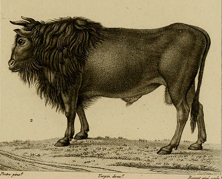
We will now move on to a diploid model of a single locus with two segregating alleles. As an example of the change in the frequency of an allele driven by selection, let’s consider the evolution of lactase persistence. A number of different human populations that historically have raised cattle have convergently evolved to maintain the expression of the protein lactase into adulthood (in most mammals the protein is switched off after childhood), with different lactase-persistence mutations having arisen and spread in different pastoral human populations. This continued expression of lactase allows adults to break down lactose, the main carbohydrate in milk, and so benefit nutritionally from milk-drinking. This seems to have offered a strong fitness benefit to individuals in pastoral populations.
With the advent of techniques to sequence ancient human DNA, researchers can now potentially track the frequency of selected mutations over thousands of years. The frequency of a lactase persistence allele in ancient Central European populations is shown in Figure 10.3. The allele is absent more than 5,000 years ago, but now found at frequency of upward of \(70\%\) in many European populations.
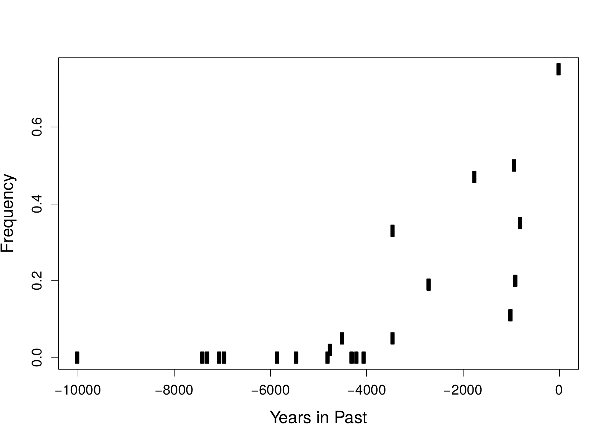
We will assume that the difference in fitness between the three genotypes comes from differences in viability, i.e. differential survival of individuals from the formation of zygotes to reproduction. We denote the absolute fitnesses of genotypes \(A_1A_1\), \(A_1A_2\), and \(A_2A_2\) by \(W_{11}\), \(W_{12}\), and \(W_{22}\). Specifically, \(W_{ij}\) is the probability that a zygote of genotype \(A_iA_j\) survives to reproduction. Assuming that individuals mate at random, the number of zygotes that are of the three genotypes in generation \(t\) are
\[Np_t^2, ~~~ N2p_tq_t, ~~~ Nq_t^2. \tag{10.13}\]
The mean fitness of the population of zygotes is then
\[\overline{W}_t = W_{11} p_t^2+W_{12} 2p_tq_t + W_{22} q_t^2. \tag{10.14}\]
Again, this is simply the weighted mean of the genotypic fitnesses.
How many zygotes of each of the three genotypes survive to reproduce? An individual of genotype \(A_1A_1\) has a probability of \(W_{11}\) of surviving to reproduce, and similarly for other genotypes. Therefore, the expected number of \(A_1A_1\), \(A_1A_2\), and \(A_2A_2\) individuals who survive to reproduce is
\[NW_{11} p_t^2, ~~~ NW_{12} 2p_tq_t , ~~~ N W_{22} q_t^2. \tag{10.15}\]
It then follows that the total number of individuals who survive to reproduce is
\[N \left(W_{11} p_t^2+W_{12} 2p_tq_t + W_{22} q_t^2 \right). \tag{10.16}\]
This is simply the mean fitness of the population multiplied by the population size (i.e. \(N \overline{w}\)).
The relative frequency of \(A_1A_1\) individuals at reproduction is simply the number of \(A_1A_1\) genotype individuals at reproduction (\(NW_{11} p_t^2\)) divided by the total number of individuals who survive to reproduce (\(N \overline{W}\)), and likewise for the other two genotypes. Therefore, the relative frequency of individuals with the three different genotypes at reproduction is
\[\frac{NW_{11} p_t^2}{N\overline{W}}, ~~~ \frac{NW_{12} 2p_tq_t}{N\overline{W}} , ~~~ \frac{N W_{22} q_t^2}{N\overline{W}} \tag{10.17}\]
(see Table 10.1).
| \(A_1A_1\) | \(A_1A_2\) | \(A_2A_2\) | |
|---|---|---|---|
| Absolute no. at birth | \(Np_t^2\) | \(N2p_tq_t\) | \(Nq_t^2\) |
| Fitnesses | \(W_{11}\) | \(W_{12}\) | \(W_{22}\) |
| Absolute no. at reproduction | \(NW_{11} p_t^2\) | \(NW_{12} 2p_tq_t\) | \(N W_{22} q_t^2\) |
| Relative freq. at reproduction | \(\frac{W_{11}}{\overline{W}} p_{t}^2\) | \(\frac{W_{12}}{\overline{W}} 2 p_{t} q_{t}\) | \(\frac{W_{22}}{\overline{W}} q_{t}^2\) |
As there is no difference in the fecundity of the three genotypes, the allele frequencies in the zygotes forming the next generation are simply the allele frequency among the reproducing individuals of the previous generation. Hence, the frequency of \(A_1\) in generation \(t+1\) is
\[p_{t+1} = \frac{W_{11} p_t^2 + W_{12} p_tq_t}{\overline{W}} . \tag{10.18}\]
Note that, again, the absolute value of the fitnesses is irrelevant to the frequency of the allele. Therefore, we can just as easily replace the absolute fitnesses with the relative fitnesses. That is, we may replace \(W_{ij}\) by \(w_{ij} = W_{ij}/W_{11}\), for instance.
Each of our genotype frequencies is responding to selection in a manner that depends just on its fitness compared to the mean fitness of the population. For example, the frequency of the \(A_1A_1\) homozygotes increases from birth to adulthood in proportion to \({}^{W_{11}}\!/\!{}_{\overline{W}}\). In fact, we can estimate this fitness ratio for each genotype by comparing the frequency at birth compared to adults. As an example of this calculation, we’ll look at some data from sticklebacks.
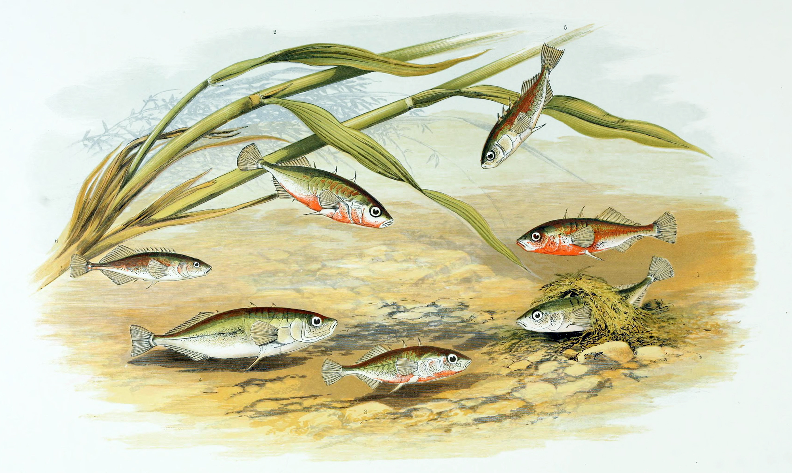

1 The actual dynamics observed by Barrett et al. (2008) are more complicated, as in the very young fish selection reverses direction.
Marine threespine stickleback (Gasterosteus aculeatus) independently colonized and adapted to many freshwater lakes as glaciers receded following the last ice age, making sticklebacks a wonderful system for studying the genetics of adaptation. In marine habitats, most of the stickleback have armour plates to protect them from predation, but freshwater populations repeatedly evolve the loss of armour plates due to selection on an allele at the Ectodysplasin gene (EDA). This allele is found as a standing variant at very low frequency marine populations; Barrett et al. (2008) took advantage of this fact and collected and bred a population of marine individuals carrying both the low- (L) and completely- plated (C) alleles. They introduced the offspring of this cross into four freshwater ponds and monitored genotype frequencies 1 over their life courses:
| CC | LC | LL | |
|---|---|---|---|
| Juveniles | 0.55 | 0.23 | 0.22 |
| Adults | 0.21 | 0.53 | 0.26 |
| Adults/Juv. (\(W_{\bullet}/\overline{W}\)) | 0.4 | 2.3 | 1.2 |
| rel. fitness (\(W_{\bullet}/W_{12}\)) | 0.17 | 1.0 | 0.54 |
The heterozygotes have increased in frequency dramatically in the population as their fitness is more than double the mean fitness of the population. We can also calculate the relative fitness of each genotype by dividing through by the fitness of the fittest genotype, the heterozygote in this case (doing this cancels through \(\overline{W}\)). The relative fitness of the \(CC\) is \(\sim 1/5\) of the heterozygote. Note that this calculation does not rely on the genotype frequencies being at their HWE in the juveniles.
Question 10.2 A) What is the frequency of the low-plated EDA allele (\(L\)) at the start of the stickleback experiment?
B) What is the frequency in the adults?
C) Calculate the frequency in adults, this time by using the relative fitnesses.
The change in frequency from generation \(t\) to \(t+1\) is
\[\Delta p_t = p_{t+1} -p_{t}= \frac{w_{11} p_t^2 + w_{12} p_tq_t}{\overline{w}} - p_t. \tag{10.19}\]
To simplify this equation, we will first define two variables \(\overline{w}_1\) and \(\overline{w}_2\) as
\[\begin{aligned} \overline{w}_1 & = w_{11} p_t + w_{12} q_t, \\ \overline{w}_2 & = w_{12} p_t+ w_{22} q_t. \end{aligned} \tag{10.20}\]
These are called the marginal fitnesses of allele \(A_1\) and \(A_2\), respectively. They are so called as \(\overline{w}_1\) is the average fitness of an allele \(A_1\), i.e. the fitness of \(A_1\) in a homozygote weighted by the probability it is in a homozygote (\(p_t\)) plus the fitness of \(A_1\) in a heterozygote weighted by the probability it is in a heterozygote (\(q_t\)). 2.
2 The marginal fitnesses are also the phenotypic additive effects of our two alleles on fitness, defined in Equation 7.18 and (7.18)
We further note that the mean relative fitness can be expressed in terms of the marginal fitnesses as
\[\overline{w} = \overline{w}_1 p_t + \overline{w}_2 q_t, \tag{10.21}\]
where, for notational simplicity, we have omitted subscript t for the dependence of mean and marginal fitnesses on time.
We can then rewrite Equation 10.19 using \(\overline{w}_1\) and \(\overline{w}_2\) as
\[\Delta p_t = \frac{ (\overline{w}_1-\overline{w}_2)}{\overline{w}} p_t q_t. \tag{10.22}\]
The sign of \(\Delta p_t\), i.e. whether allele \(A_1\) increases of decreases in frequency, depends only on the sign of \((\overline{w}_1-\overline{w}_2)\). 3 The frequency of \(A_1\) will keep increasing over the generations so long as its marginal fitness is higher than that of \(A_2\), i.e. \(\overline{w}_1 > \overline{w}_2\), while if \(\overline{w}_1 < \overline{w}_2\), the frequency of \(A_1\) will decrease. Note the similarity between Equation 10.22 and the respective expression for the haploid model in Equation 10.4. (We will return to the special case where \(\overline{w}_1 = \overline{w}_2\) shortly).
3 This difference between our marginal fitnesses is the difference between the additive effects of the two alleles, thus it is also the regression slope (\(\alpha_{\ell}\)) of the fitness (phenotype) on additive genotype (\(0\), \(1\), \(2\)) see discussion around Equation 7.20.
We can also rewrite (10.19) as
\[\Delta p_t =\frac{1}{2} \frac{p_tq_t}{\overline{w}} \frac{d \overline{w}}{dp}, \tag{10.23}\]
This form shows that the frequency of \(A_1\) will increase (\(\Delta p_t > 0\)) if the mean fitness is an increasing function of the frequency of \(A_1\) (i.e. if \(\frac{d \overline{w}}{dp}>0\)). On the other hand, the frequency of \(A_1\) will decrease (\(\Delta p_t < 0\)) if the mean fitness is a decreasing function of the frequency of \(A_1\) (i.e. if \(\frac{d \overline{w}}{dp}<0\)). Thus, although selection acts on individuals, under this simple model, selection is acting to increase the mean fitness of the population. The rate of this increase is proportional to the variance in allele frequencies within the population (\(p_tq_t\)). This formulation suggested to Wright (1932) the view of natural selection as moving populations up local fitness peaks, as we encountered in Section 8.2.2 in discussing phenotypic fitness peaks. Again this view of selection as maximizing mean fitness only holds true if the genotypic fitnesses are frequency independent; later in this chapter we’ll discuss some important cases where that doesn’t hold.
Question 10.3 For many generations you have been studying an annual wildflower that has two color morphs, orange and white. You have discovered that a single bi-allelic locus controls flower color, with the white allele being recessive. The pollinator of these plants is an almost blind bat, so individuals are pollinated at random with respect to flower color. Your population census of 200 individuals showed that the population consisted of 168 orange-flowered individuals, and 32 white-flowered individuals.
Heavy February rainfall creates optimal growing conditions for an exotic herbivorous beetle with a preference for orange-flowered individuals. This year it arrives at your study site with a ravenous appetite. Only 50% of orange-flowered individuals survive its wrath, while 90% of white-flowered individuals survive until the end of the growing season.
A) What is the initial frequency of the white allele, and what do you have to assume to obtain this?
B) What is the frequency of the white allele in the seeds forming the next generation?
Diploid directional selection
So far, our treatment of the diploid model of selection has been in terms of generic fitnesses \(w_{ij}\). In the following, we will use particular parameterizations to gain insight about two specific modes of selection: directional selection and heterozygote advantage.
Directional selection means that one of the two alleles always has higher marginal fitness than the other one. Let us assume that \(A_1\) is the fitter allele, so that \(w_{11} \geq w_{12} \geq w_{22}\), and hence \(\overline{w}_1 > \overline{w}_2\). As we are interested in changes in allele frequencies, we may use relative fitnesses. We parameterize the reduction in relative fitness in terms of a selection coefficient, similar to the one we met in the haploid selection section, as follows:
| genotype | \(A_1A_1\) | \(A_1A_2\) | \(A_2A_2\) |
|---|---|---|---|
| absolute fitness | \(W_{11}\) | \(\geq W_{12} \geq\) | \(W_{22}\) |
| relative fitness (generic) | \(w_{11} = W_{11}/W_{11}\) | \(w_{12} = W_{12}/W_{11}\) | \(w_{22} = W_{22}/W_{11}\) |
| relative fitness (specific) | \(1\) | \(1-sh\) | \(1-s\). |
Here, the selection coefficient \(s\) is the difference in relative fitness between the two homozygotes, and \(h\) is the dominance coefficient. For selection to be directional, we require that \(0 \leq h \leq 1\) holds. The dominance coefficient allows us to move between two extremes. One is when \(h = 0\), such that allele \(A_1\) is fully dominant and \(A_2\) fully recessive. In this case, the heterozygote \(A_1A_2\) is as fit as the \(A_1A_1\) homozgyote genotype. The inverse holds when \(h = 1\), such that allele \(A_1\) is fully recessive and \(A_2\) fully dominant.
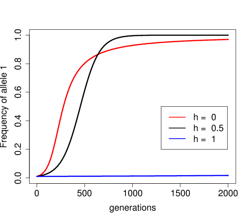
We can then rewrite Equation 10.22 as
\[\Delta p_t = \frac{p_ths + q_t s(1-h)}{\overline{w}}p_tq_t , \tag{10.24}\]
where
\[\overline{w} = 1-2p_tq_t sh-q_t^2s. \tag{10.25}\]
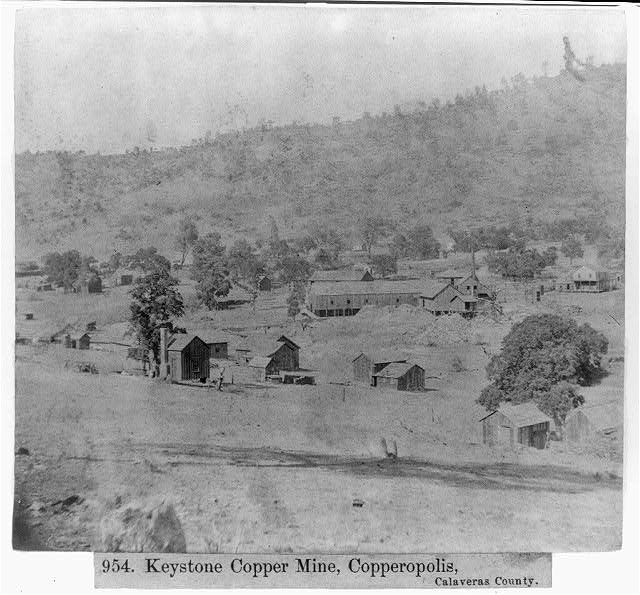
Question 10.4 Throughout the Californian foothills are old copper and gold-mines, which have dumped out soils that are polluted with heavy metals. While these toxic mine tailings are often depauperate of plants, Mimulus guttatus and a number of other plant species have managed to adapt to these harsh soils. Wright et al. (2015) have mapped one of the major loci contributing to the adaptation to soils at two mines near Copperopolis, CA. Wright et al. (2015) planted homozygote seedlings out in the mine tailings and found that only \(10\%\) of the homozygotes for the non-copper-tolerant allele survived to flower, while \(40\%\) of the copper-tolerant seedlings survived to flower.
A) What is the selection coefficient acting against the non-copper-tolerant allele on the mine tailing?
B) The copper-tolerant allele is fairly dominant in its action on fitness. If we assume that \(h=0.1\), what percentage of heterozygotes should survive to flower?
Question 10.5 Comparing the red (\(h=0\)) and black (\(h=0.5\)) trajectories in Figure 10.5, provide an explanation for why \(A_1\) increases faster initially if \(h=0\), but then approaches fixation more slowly compared to the case of \(h=0.5\).
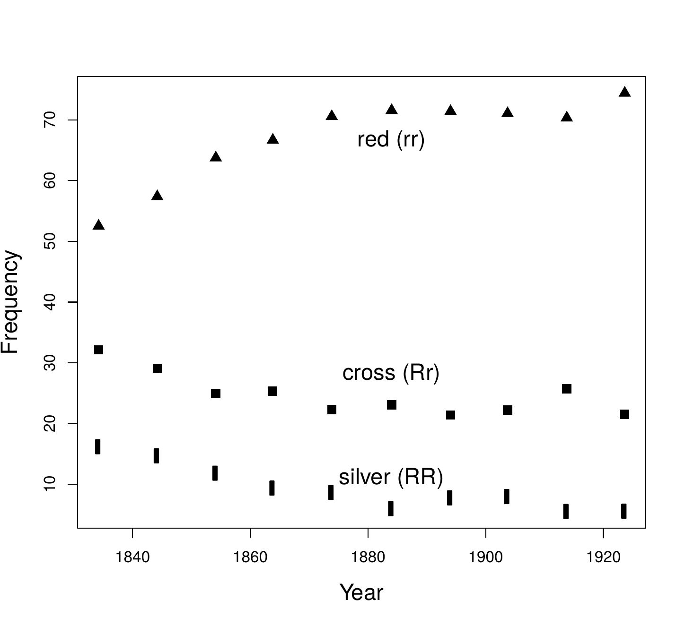
To see how dominance affects the trajectory of a real polymorphism, we’ll consider an example from a colour polymorphism in red foxes (Vulpes vulpes).
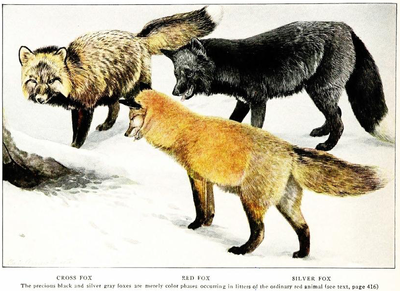
There are three colour morphs of red foxes: silver, cross, and red (see Figure 10.8), with this difference primarily controlled by a single polymorphism with genotypes RR, Rr, and rr respectively. The fur pelts of the silver morph fetched three times the price for hunters compared to cross (a smoky red) and red pelts, the latter two being seen as roughly equivalent in worth. Thus the desirability of the pelts acts as a recessive trait, with much stronger selection against the silver homozygotes. As a result of this price difference, silver foxes were hunted more intensely and declined as a proportion of the population in Eastern Canada, see Figure 10.7, as documented by Elton (1942), from \(16\%\) to \(5\%\) from 1834 to 1937. Haldane (1942) reanalyzed these data and showed that they were consistent with recessive selection acting against the silver morph alone. Note how the heterozygotes (cross) decline somewhat as a result of selection on the silver homozygotes, but overall the R allele is slow to respond to selection as it is ‘hidden’ from selection in the heterozygote state.
Directional selection on an additive allele. A special case is when \(h = 0.5\). This case is the case of no dominance, as the interaction among alleles with respect to fitness is strictly additive. Then, Equation 10.24 simplifies to
\[\Delta p_t = \frac{1}{2}\frac{s}{\overline{w}}p_tq_t . \tag{10.26}\]
If selection is very weak, i.e. \(s \ll 1\), the denominator (\(\overline{w}\)) is close to \(1\) and we have
\[\Delta p_t = \frac{1}{2} s p_t q_t . \tag{10.27}\]
It is useful to compare Equation 10.27 to our haploid model for \(\Delta p_t\), Equation 10.4, setting \(w_1 = 1\) and \(w_2 = 1-s\). Again, assume that \(s\) is small, so that our haploid Equation 10.4 becomes \(\Delta p_t = s p_t q_t\), which differs from our diploid model only by a factor of two. Under our additive diploid model, for weak selection, the selection against each allele is equal to s/2 so this is equivalent to the haploid case where we replace \(s\) by \({}^{s}\!/\!{}_{2}\).
From this analogy, we can borrow some insight we gained from the haploid model. Specifically, the trajectory of the frequency of allele \(A_1\) in the diploid model without dominance follows a logistic growth curve similar to Equation 10.9. From this similarity, we can extrapolate from Equation 10.11 to find the time it takes for our diploid, beneficial, additive allele (\(A_1\)) to move from frequency \(p_0\) to \(p_{\tau}\):
\[\tau \approx \frac{2}{s} \log \left(\frac{p_{\tau} q_0}{q_{\tau} p_0}\right) \tag{10.28}\]
generations; this just differs by a factor of \(2\) from our haploid model. Using this result we can find the time it takes for our favourable, additive allele (\(A_1\)) to transit from its entry into the population (\(p_0 =1/(2N)\)) to close to fixation (\(p_{\tau} =1-1/(2N)\)):
\[\tau \approx \frac{4}{s} \log(2N) \tag{10.29}\]
generations. Note the similarity to Equation 10.12 for the haploid model, with a difference by a factor of 2 due to the choice of parametrization (and that the number of alleles is \(2N\) in the diploid model, rather than \(N\)). Doubling our selection coefficient halves the time it takes for our allele to move through the population.
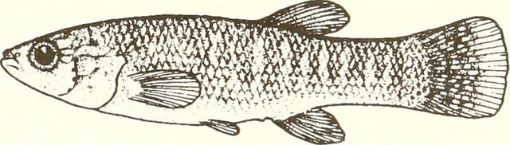
Question 10.6 Gulf killifish (Fundulus grandis) have rapidly adapted to the very high pollution levels in the Houston shipping canal since the 1950s. One of the ways that they’ve adapted is through the deletion of their aryl hydrocarbon receptor (AHR) gene. Oziolor et al. (2019) estimated that individuals who were homozygous for the intact AHR gene had a relative fitness of 20% of that of homozygotes for the deletion. Assuming an additive selection model, and an effective population size of 200 thousand individuals, how long would it take for the deletion to reach fixation, starting as a single copy in this population?
10.2 Balancing selection and the selective maintenance of polymorphism.
Directional selection on genotypes is expected to remove variation from populations, yet we see plentiful phenotypic and genetic variation in every natural population. Why is this? Three broad explanations for the maintenance of polymorphisms are
Variation is maintained by a balance of genetic drift and mutation (we discussed this explanation in Chapter 4).
Selection can sometimes act to maintain variation in populations (balancing selection).
Deleterious variation can be maintained in the population as a balance between selection removing variation and mutation constantly introducing new variation into the population.
We’ll turn to these latter two explanations through this chapter and the next. Note that these explanations are not mutually exclusive. Each explanation will explain some proportion of the variation, and these proportions will differ over species and classes of polymorphism. A central challenge in population genomics is how we can do this in a systematic way.
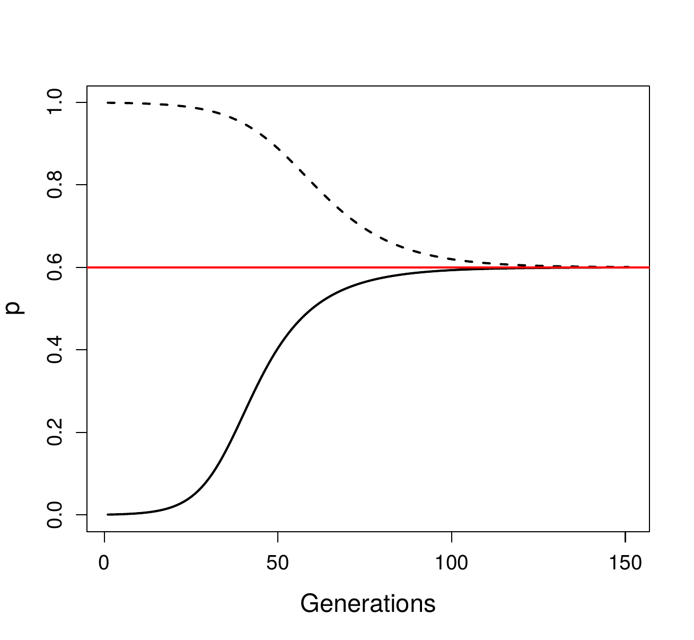
Heterozygote advantage
One form of balancing selection occurs when the heterozygotes are fitter than either of the homozygotes. In this case, it is useful to parameterize the relative fitnesses as follows:
| genotype | \(A_1A_1\) | \(A_1A_2\) | \(A_2A_2\) |
|---|---|---|---|
| absolute fitness | \(w_{11}\) | \(<w_{12}>\) | \(w_{22}\) |
| relative fitness (generic) | \(w_{11}=W_{11}/W_{12}\) | \(w_{12} = W_{12}/W_{12}\) | \(w_{22} = W_{22}/W_{12}\) |
| relative fitness (specific) | \(1-s_1\) | \(1\) | \(1-s_2\) |
Here, \(s_1\) and \(s_2\) are the differences between the relative fitnesses of the two homozygotes and the heterozygote. Note that to obtain relative fitnesses we have divided absolute fitness by the heterozygote fitness. We could use the same parameterization as in the model of directional selection, but the reparameterization we have chosen here makes the math easier.
In this case, when allele \(A_1\) is rare, it is often found in a heterozygous state, while the \(A_2\) allele is usually in the homozygous state, and so \(A_1\) is more fit and increases in frequency. However, when the allele \(A_1\) is common, it is often found in a less fit homozygous state, while the allele \(A_2\) is often found in a heterozygous state; thus it is now allele \(A_2\) that increases in frequency at the expense of allele \(A_1\). Thus, at least in the deterministic model, neither allele can reach fixation and both alleles will be maintained at an equilibrium frequency as a balanced polymorphism in the population.
We can solve for this equilibrium frequency by setting \(\Delta p_t = 0\) in Equation 10.22, i.e. \(p_tq_t (\overline{w}_1-\overline{w}_2)=0\). Doing so, we find that there are three equilibria. Two of them are not very interesting (\(p=0\) or \(q=0\)), but the third one is a stable polymorphic equilibrium, where \(\overline{w}_1-\overline{w}_2=0\) holds. Using our \(s_1\) and \(s_2\) parametrization above, we see that the marginal fitnesses of the two alleles are equal when
\[p_e = \frac{s_2}{s_1+s_2} \tag{10.30}\]
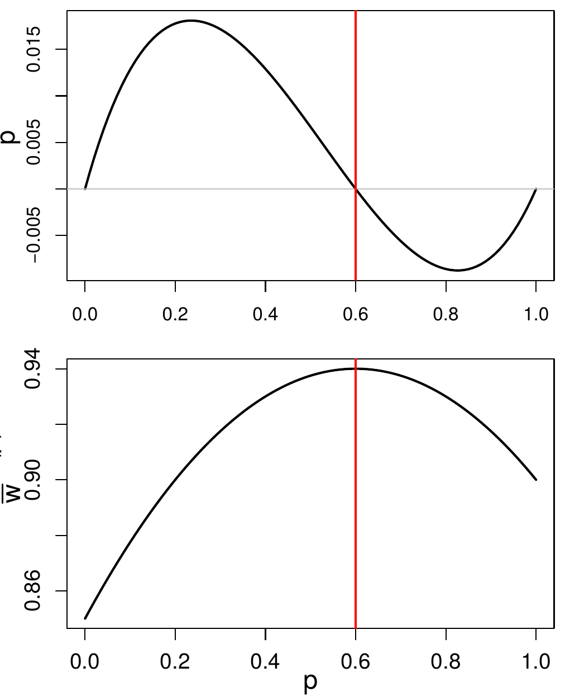
for the equilibrium frequency of interest. This is also the frequency of \(A_1\) at which the mean fitness of the population is maximized. The highest possible fitness of the population would be achieved if every individual was a heterozygote. However, Mendelian segregation of alleles in the gametes of heterozygotes means that a sexual population can never achieve a completely heterozygote population. This equilibrium frequency represents an evolutionary compromise between the advantages of the heterozygote and the comparative costs of the two homozygotes.
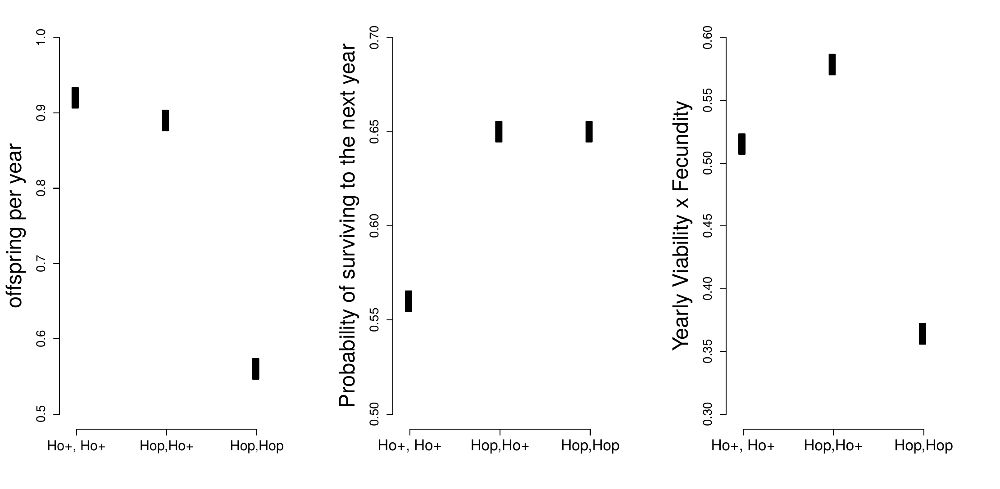
One example of a polymorphism maintained by heterozygote advantage is a horn-size polymorphism found in Soay sheep, a population of feral sheep on the island of Soay (about 40 miles off the coast of Scotland). The horns of the soay sheep resemble those of the wild Mouflon sheep, and the male Soay sheep use their horns to defend females during the rut. Johnston et al. (2013) found a large-effect locus, at the RXFP2 gene, that controls much of the genetic variation for horn size. Two alleles Ho\(^p\) and Ho\(^+\) segregate at this locus. The Ho\(^+\) allele is associated with growing larger horns, while the Ho\(^p\) allele is associated with smaller horns, with a reasonable proportion of Ho\(^p\) homozygotes developing no horns at all. Johnston et al. (2013) found that the Ho locus had substantial effects on male, but not female, fitness (see Figure 10.12).
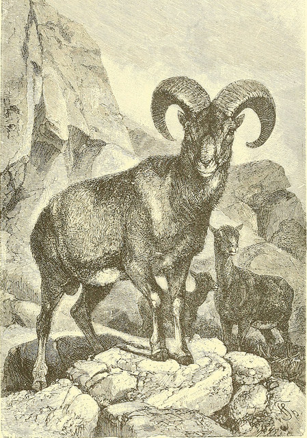
The Ho\(^p\) allele has a mostly recessive effect on male fecundity, with the Ho\(^p\) homozygotes having lower yearly reproductive success presumably due to the fact that they perform poorly in male-male competition (left plot Figure 10.12). Conversely, the Ho\(^{+}\) has a mostly recessive effect on viability, with Ho\(^{+}\) homozygotes having lower yearly survival (middle plot Figure 10.12), likely because they spend little time feeding during the rut and so lose substantial body weight. Thus both of the homozygotes suffer from trade-offs between viability and fecundity. As a result, the Ho\(^p\)Ho\(^+\) heterozygotes have the highest fitness (right plot Figure 10.12). The allele is thus balanced at intermediate frequency (\(~50\%\)) in the population due to this trade off between fitness at different life history stages.
Question 10.7 Assume that the frequency of the Ho\(^P\) allele is 10%, that there are 1000 males at birth, and that individual adults mate at random.
A) What is the expected number of males with each of the three genotypes in the population at birth?
B) Assume that a typical male individual of each genotypes has the following probability of surviving to adulthood:
| Ho\(^+\) Ho\(^+\) | Ho\(^+\) Ho\(^p\) | Ho\(^p\) Ho\(^p\) |
|---|---|---|
| 0.5 | 0.8 | 0.8 |
Making the assumptions from above, how many males of each genotype survive to reproduce?
C) Of the males who survive to reproduce, let’s say that males with the Ho+Ho+ and Ho+Ho\(^p\) genotype have on average 2.5 offspring, while Ho\(^p\)Ho\(^p\) males have on average 1 offspring. Taking into account both survival and reproduction, how many offspring do you expect each of the three genotypes to contribute to the total population in the next generation?
D) What is the frequency of the Ho+ allele in the sperm that will form this next generation?
E ) How would your answers to B-D change if the Ho\(^p\) allele was at 90% frequency?
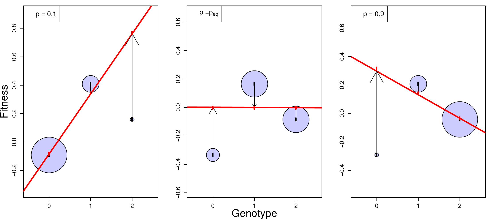
To push our understanding of heterozygote advantage a little further, note that the marginal fitnesses of our alleles are equivalent to the additive effects of our alleles on fitness. Recall from our discussion of non-additive variation (Section 7.1.3) that the difference in the additive effects of the two alleles gives the slope of the regression of additive genotypes on fitness, and that there is additive variance in fitness when this slope is non-zero. So what’s happening here in our heterozygote advantage model is that the marginal fitness of the \(A_1\) allele, the additive effect of allele \(A_1\) on fitness, is greater than the marginal fitness of the \(A_2\) allele (\(\bar{w}_1 > \bar{w}_2\)) when \(A_1\) is at low frequency in the population. In this case, the regression of fitness on the number of \(A_1\) alleles in a genotype has a positive slope. This is true when the frequency of the \(A_1\) allele is below the equilibrium frequency. If the frequency of \(A_1\) is above the equilibrium frequency, then the marginal fitness of allele \(A_2\) is higher than the marginal fitness of allele \(A_1\) (\(\bar{w}_1 < \bar{w}_2\)) and the regression of fitness on the number of copies of allele \(A_1\) that individuals carry is negative. In both cases there is additive genetic variance for fitness (\(V_A > 0\)) and the population has a directional response. Only when the population is at its equilibrium frequency, i.e. when \(\bar{w}_1 = \bar{w}_2\), is there no additive genetic variance (\(V_A = 0\)), as the linear regression of fitness on genotype is zero.
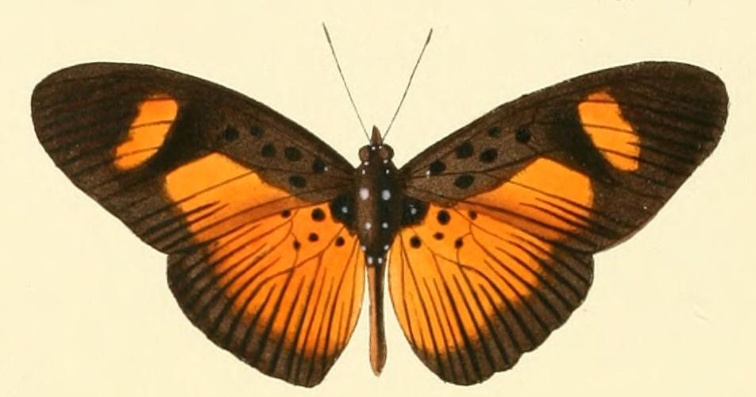

Underdominance. Another case that is of potential interest is the case of fitness underdominance, where the heterozygote is less fit than either of the two homozygotes. Underdominance can be parametrized as follows:
| genotype | \(A_1A_1\) | \(A_1A_2\) | \(A_2A_2\) |
|---|---|---|---|
| absolute fitness | \(w_{11}\) | \(>w_{12}<\) | \(w_{22}\) |
| relative fitness (generic) | \(w_{11}=W_{11}/W_{12}\) | \(w_{12} = W_{12}/W_{12}\) | \(w_{22} = W_{22}/W_{12}\) |
| relative fitness (specific) | \(1+s_1\) | \(1\) | \(1+s_2\) |
Underdominance also permits three equilibria: \(p=0\), \(p=1\), and a polymorphic equilibrium \(p=p_U\). However, now only the first two equilibria are stable, while the polymorphic equilibrium (\(p_ux\)) is unstable. If \(p<p_U\), then \(\Delta p_t\) is negative and allele \(A_1\) will be lost, while if \(p>p_U\), allele \(A_1\) will become fixed.
While strongly-selected, underdominant alleles might not spread within populations (if \(p_U \gg 0\)), they are of special interest in the study of speciation and hybrid zones. That is because alleles \(A_1\) and \(A_2\) may have arisen in a stepwise fashion, i.e. not by a single mutation, but in separate subpopulations. In this case, heterozygote disadvantage will play a potential role in species maintenance.
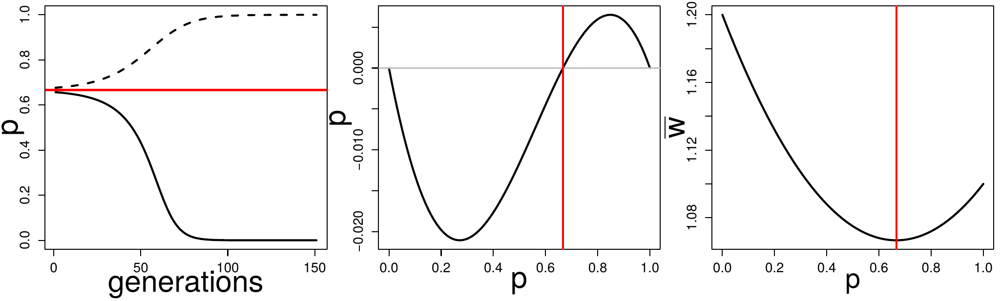
Negative frequency-dependent selection. In the models and examples above, heterozygote advantage maintains multiple alleles in the population because the common allele has a disadvantage compared to the other rarer allele. In the case of heterozygote advantage, the relative fitnesses of our three genotypes are not a function of the other genotypes present in the population. However, there’s a broader set of models where the relative fitness of a genotype depends on the genotypic composition of the population; this broad family of models is called frequency-dependent selection. Negative frequency-dependent selection, where the fitness of an allele (or phenotype) decreases as it becomes more common in the population, can act to maintain genetic and phenotypic diversity within populations. While cases of long-term heterozygote advantage may be somewhat rare in nature, negative frequency-dependent selection is likely a common form of balancing selection.
One common mechanism that may create negative frequency-dependent selection is the interaction between individuals within or among species. For example, negative frequency-dependent dynamics can arise in predator-prey or pathogen-host dynamics, where alleles conferring common phenotypes are at a disadvantage because predators or pathogens learn or evolve to counter the phenotypic effects of common alleles.
As one example of negative frequency-dependent selection, consider the two flower colour morphs in the deceptive elderflower orchid (Dactylorhiza sambucina). Throughout Europe, there are populations of these orchids polymorphic for yellow- and purple-flowered individuals, with the yellow flower corresponding to a recessive allele. Neither of these morphs provide any nectar or pollen reward to their bumblebee pollinators.
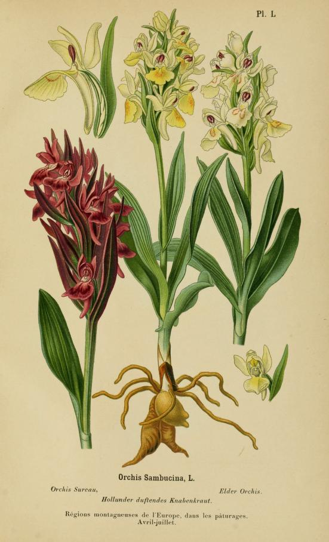
Thus these plants are typically pollinated by newly emerged bumblebees who are learning about which plants offer food rewards, with the bees alternating to try a different coloured flower if they find no food associated with a particular flower-colour morph (Smithson and Macnair 1997). Gigord et al. (2001) explored whether this behaviour by bees could result in negative frequency-dependent selection; out in the field, the researchers set up experimental orchid plots in which they varied the frequency of the two colour morphs. Figure 10.18 shows their measurements of the relative male and female reproductive success of the yellow morph across these experimental plots. When the yellow morph is rare, it has higher reproductive success than the purple morph, as it receives a disproportionate number of visits from bumblebees that are dissatisfied with the purple flowers. This situation is reversed when the yellow morph becomes common in the population; now the purple morph outperforms the yellow morph. Therefore, both colour morphs are maintained in this population, and presumably Europe-wide, due to this negative frequency-dependent selection.
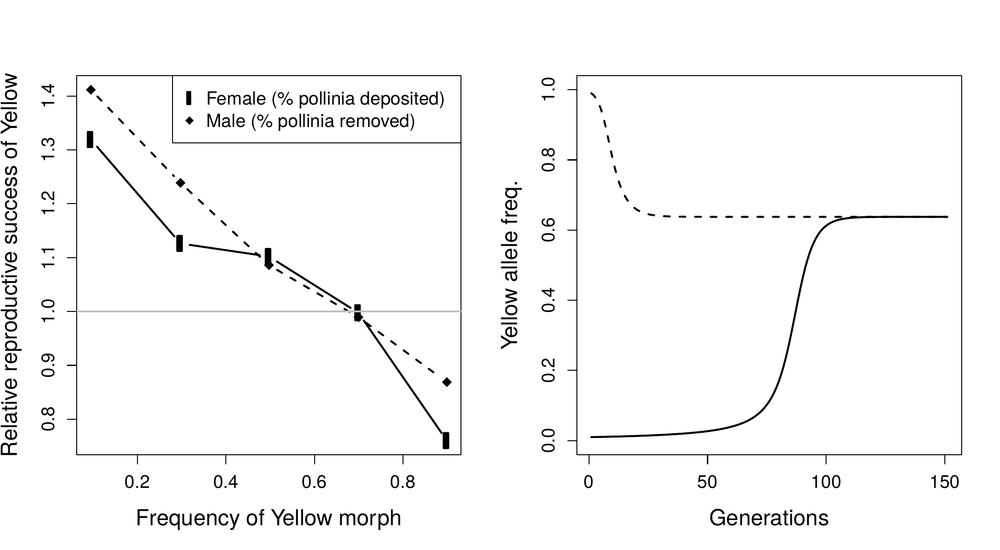
Negative frequency-dependent selection can also maintain different breeding strategies due to interactions amongst individuals within a population. One dramatic example of this occurs in ruffs (Philomachus pugnax), a marsh-wading sandpiper that summers in Northern Eurasia. The males of this species lek, with the males gathering on open ground to display and attract females. There are three different male morphs differing in their breeding strategy. The large majority of males are ‘Independent’, with black or chestnut ruff plumage, and try to defend and display on small territories. ‘Satellite’ males, with white ruff plumage, make up \(\sim 16\%\) of males and do not defend territories, but rather join in displays with Independent males and opportunistically mate with females visiting the lek. Finally, the rare ‘Faeder’ morph was only discovered in 2006 (Jukema and Piersma 2006) and makes up less than 1% of males. These Faeder males are female mimics who hang around the territories of Independents and try to ’sneak’ in matings with females. Faedar males have plumage closely resembling that of females and a smaller body size than other males, but with larger testicles (presumably to take advantage of rare mating opportunities).
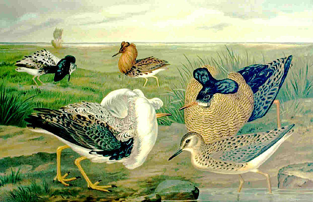

All three of the ruff morphs, with their complex behavioural and morpological differences, are controlled by three alleles at a single autosomal locus, with the Satellite and Faeder alleles being genetically dominant over the high frequency Independent allele. The genetic variation for these three morphs is potentially maintained by negative frequency-dependent selection, as all three male strategies are likely at an advantage when they are rare in the population. For example, while the Satellites mostly lose out on mating opportunities to Independents, they may have longer life-spans and so may have equal life-time reproductive success (Widemo 1998). However, Satellite and Faeder males are totally reliant on the lekking Independent males, and so both of these alternative strategies cannot become overly common in the population. The locus controlling these differences has been mapped, and the underlying alleles have persisted for roughly four million years (Küpper et al. 2016; Lamichhaney et al. 2016). While this mating system is bizarre, the frequency dependent dynamics mean that it has been around longer than we’ve been using stone tools.
While these examples may seem somewhat involved, they must be simple compared to the complex dynamics that maintain the hundreds of alleles present at the genes in the major histocompatibility complex (MHC). MHC genes are key to the coordination of the vertebrate immune system in response to pathogens, and are likely caught in an endless arms race with pathogens adapting to common MHC alleles, allowing rare MHC alleles to be favoured. Balancing selection at the MHC locus has maintained some polymorphisms for tens of millions of years, such that some of your MHC alleles may be genetically more closely related to MHC alleles in other primates than they are to alleles in your close human friends.
10.3 Fluctuating selection pressures
Selection pressures are rarely constant through time due to environmental change. As selection pressures on a polymorphism change the frequency of the allele can fluctuate along with them. This can have important implications for which alleles can survive and spread. We’ll see that when selection fluctuates that the success of alleles and genotypes can often be summarized by their “geometric mean fitness’ and so alleles and genotypes that bet-hedge in their strategies can win out in long-term competitions between individuals in fluctuating environments.
Haploid model with fluctuating selection.
We can use our haploid model to consider this case where the fitnesses depend on time (Dempster 1955), and say that \(w_{1,t}\) and \(w_{2,t}\) are the fitnesses of the two types in generation \(t\). The frequency of allele \(A_1\) in generation \(t+1\) is
\[p_{t+1} = \frac{w_{1,t}}{\overline{w}_t} p_t, \tag{10.31}\]
which simply follows from Equation 10.3. The ratio of the frequency of allele \(A_1\) to that of allele \(A_2\) in generation \(t+1\) is
\[\frac{p_{t+1}}{q_{t+1}} = \frac{w_{1,t}}{w_{2,t}} \frac{p_{t}}{q_{t}}. \tag{10.32}\]
Therefore, if we think of the two alleles starting in generation \(1\) at frequencies \(p_1\) and \(q_1\), then \(\tau\) generations later,
\[\frac{p_{\tau}}{q_{\tau}} = \left(\prod_{i=1}^{\tau} \frac{w_{1,i}}{w_{2,i}} \right) \frac{p_{1}}{q_{1}}. \tag{10.33}\]
The question of which allele is increasing or decreasing in frequency comes down to whether \(\left(\prod_{i=1}^{\tau} {}^{w_{1,i}}\!/\!{}_{w_{2,i}} \right)\) is \(>1\) or \(<1\). As it is a little hard to think about this ratio, we can instead take the \(\tau^{\mathrm{th}}\) root of it and consider
\[\sqrt[\tau]{\left(\prod_{i=1}^{\tau} \frac{w_{1,i}}{w_{2,i}} \right)} = \frac{\sqrt[\tau]{\prod_{i=1}^{\tau}w_{1,i}}}{\sqrt[\tau]{\prod_{i=1}^{\tau}w_{2,i}}}. \tag{10.34}\]
The term
\[\sqrt[\tau]{\prod_{i=1}^{\tau}w_{1,i}} \tag{10.35}\]
| \(A_1\) | \(A_2\) | |
|---|---|---|
| Dry | 2 | 1.57 |
| Wet | 1.16 | 1.57 |
| Arithmetic Mean | 1.58 | 1.57 |
| Geometric Mean | 1.52 | 1.57 |
is the geometric mean fitness of allele \(A_1\) over the \(\tau\) generations past generation \(t\). Therefore, allele \(A_1\) will only increase in frequency if it has a higher geometric mean fitness than allele \(A_2\) (at least in our simple deterministic model). This implies that an allele with higher geometric mean fitness can even invade and spread to fixation if its (arithmetic) mean fitness is lower than the dominant type. To see this consider two alleles that experience the fitnesses given in Table 10.2. The allele \(A_1\) does much better in dry years, but suffers in wet years; while the \(A_2\) is generalist and is not affected by the variable environment. If there is an equal chance of a year being wet or dry, the \(A_1\) allele has higher (arithmetic) mean fitness, but it will be replaced by the \(A_2\) allele as the \(A_2\) allele has higher geometric mean fitness (See Figure 10.20).
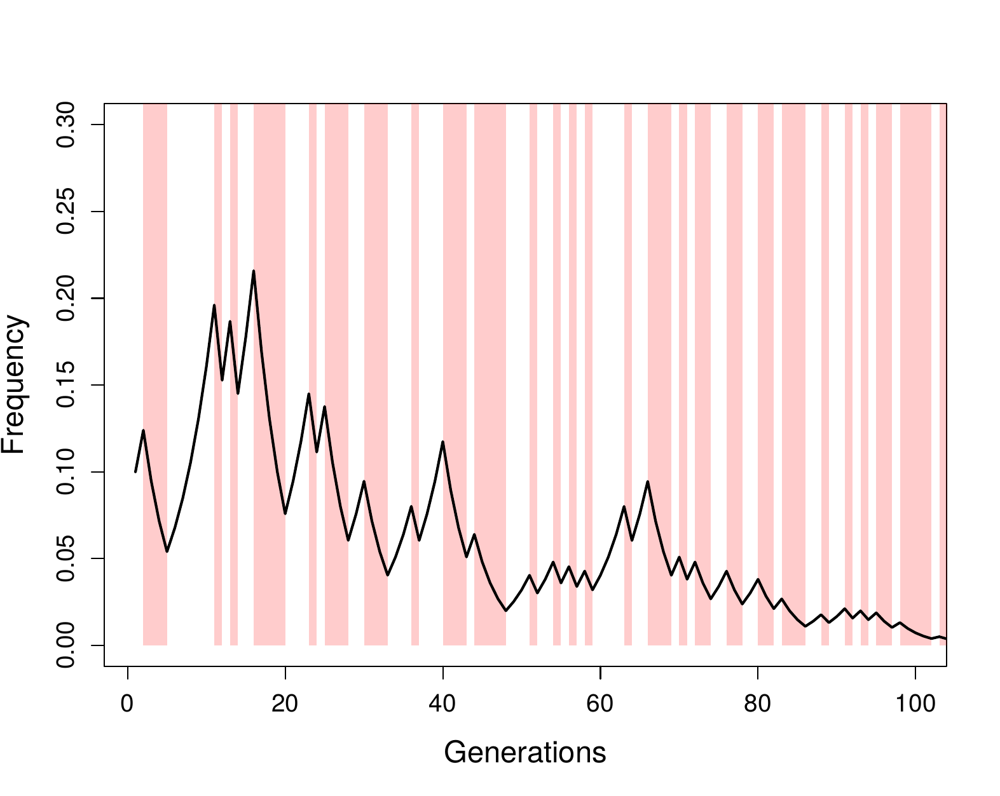
Evolution of bet hedging.
Don’t put your eggs in one basket, it makes a lot of sense to spread your bets. Financial advisors often advise you to diversify your portfolio, rather than placing all your investments in one stock. Even if that stock looks very strong, you can come a cropper that \({}^{1}\!/\!{}_{20}\) times some particular part of the market crashes. Likewise, evolution can result in risk averse strategies. Some species of bird lay multiple nests of eggs; some plants don’t put all of their energy into seeds that will germinate next year. It can even make sense to hedge your bets even if that comes at an average cost (Seger and Brockmann 1987).
To see this let’s think more about geometric fitness. We can write the relative fitness of an allele in a given generation \(i\) as \(w_{i}= 1+s_i\), such that we can write your geometric fitness as
\[\bar{g}= \sqrt[\tau]{\prod_{i=1}^{\tau-1} 1+s_i} \tag{10.36}\]
when we think about products it’s often natural to take the \(\log\) to turn it into a sum
\[\begin{aligned} \log \big( \bar{g} \big) =& \frac{1}{\tau} \sum_{i=1}^{\tau-1} \log \big(1+s_i \big) \\ = & \mathbb{E} \bigg[ \log \big( 1+s_i \big) \bigg] \end{aligned}\]
equating the mean and the expectation. Assuming that \(s_i\) is small \(\log(1+s_i \big) \approx s_i - {}^{s_i^2}\!/\!{}_{2}\), ignoring terms \(s_i^3\) and higher4 then this is
4 Here we’re using a 2nd order Taylor approximation, see math appendix Equation A.6.
\[\begin{aligned} \log \big( \bar{g} \big) \approx & \mathbb{E}\bigg[ s_i -{}^{s_i^2}\!/\!{}_{2} \bigg] \\ = & \mathbb{E} \bigg[ s_i \bigg] - \textrm{var}(s_i)/2 \\ \end{aligned}\]
where \(\textrm{var}(s_i)\) is the variance of the selection coefficient over generations.
So genotypes with high arithmetic mean fitness can be selected against, i.e. have low geometric mean fitness against, if their fitness has too high a variance across generations (Gillespie 1973, 1977). See our example above, Table 10.2 and Figure 10.20).
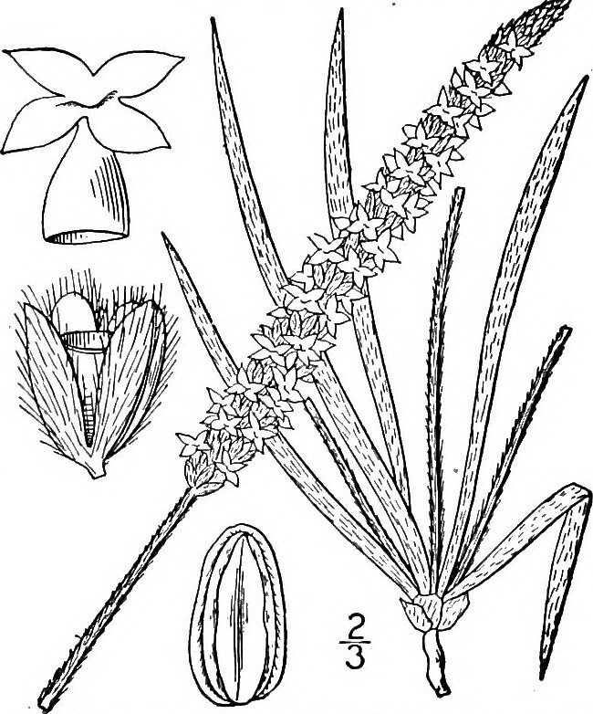
A classic example of bet-hedging is in delayed seed germination in plants (Cohen 1966). In variable environments, such as deserts, it may make sense to spread your bets over years by having only a proportion of your seeds germinate in the first year. However, delaying germination can come at a cost due to seed mortality. Gremer and Venable (2014), using data from a long-term study various species of Sonoran Desert winter showed that annual plants were indeed pursuing adaptive bet-hedging strategies. The plant species with the highest variation in among-year yield had the lowest germination fraction per year. Further, Gremer and Venable (2014) showed through modeling life that by having per-year germination proportions \(<1\) all of the species were achieving higher geometric fitness at the expense of arithmetic fitness in the variable desert environment. See Figure 10.22 for an example of bet hedging in woolly plantain.
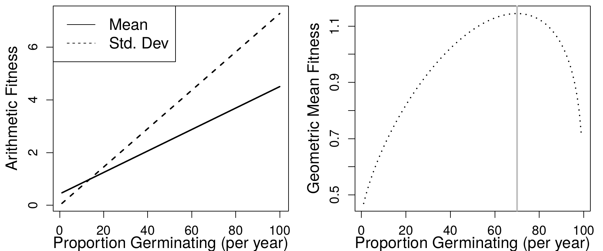
Delayed reproduction is also a common example of bet-hedging in micro-organisms. For example, the Chicken Pox virus, varicella zoster virus, has a very long latent phase. After it causes chicken pox it enters a latent phase, residing inactive in neurons in the spinal cord, only to emerge 5-40 years later to cause the disease shingles. It is hypothesized that the virus actively suppresses itself as a strategy to allow it to emerge at a later time point as insurance against there being no further susceptible hosts at the time of its first infection (Stumpf et al. 2002).
Diploid fluctuating fitness.
Selection pressures fluctuate over time and can potentially maintain polymorphisms in the population. Two examples of polymorphisms fluctuating in frequency in response to temporally-varying selection are shown in Figure 10.23; thanks to the short lifespan of Drosophila we can see seasonally-varying selection. The first example is an inversion allele in Drosophila pseudoobscura populations. Throughout western North America, two orientations of the chromosome, two ’inversion alleles’, exist: the Chiricahua and Standard alleles. Dobzhansky (1943) and Wright and Dobzhansky (1946) investigated the frequency of these inversion alleles over four years at a number of locations and found that their frequency fluctuated systematically over the seasons in response to selection (left side of 10.23). If you’re still reading these notes send Prof. Coop a picture of Dobzhansky; Dobzhansky was one of the most important evolutionary geneticists of the past century and spent a bunch of time at UC Davis in his later years. Our second example is an insertion-deletion polymorphism in the Insulin-like Receptor gene in Drosophila melanogaster. Paaby et al. (2014) tracked the frequency of this allele over time and found it oscillated with the seasons (right side of 10.23). She and her coauthors also determined that these alleles had large effects on traits such as developmental time and fecundity, which could mediate the maintenance of this polymorphism through life-history trade-offs.
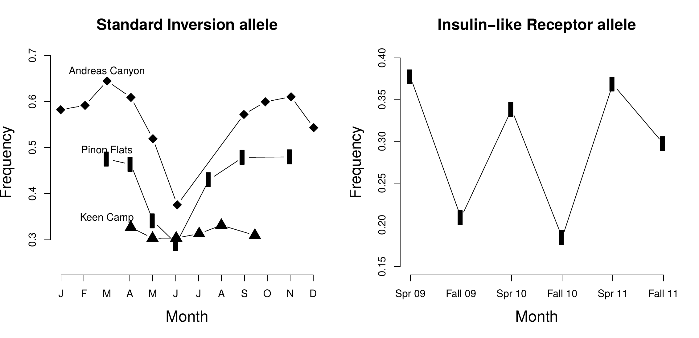
To explore temporal fluctuations in fitness, we’ll need to think about the diploid absolute fitnesses being time-dependent, where the three genotypes have fitnesses \(w_{11,t}\), \(w_{12,t}\), and \(w_{22,t}\) in generation \(t\). Modeling the diploid case with time-dependent fitness is much less tractable than the haploid case, as segregation makes it tricky to keep track of the genotype frequencies. However, we can make some progress and gain some intuition by thinking about how the frequency of allele \(A_1\) changes when it is rare (following the work of Haldane and Jayakar 1963).
When \(A_1\) is rare, i.e. \(p_t \ll 1\), the frequency of \(A_1\) in the next generation (10.18) can be approximated as
\[p_{t+1} \approx \frac{w_{12}}{\overline{w}} p_t. \tag{10.37}\]
To obtain this equation, we have ignored the \(p_{t}^2\) term (because it is very small when \(p_t\) is small) and we have assumed that \(q_t \approx 1\) in the numerator. Following a similar argument to approximate \(q_{t+1}\), we can write
\[\frac{p_{t+1}}{q_{t+1}} = \frac{w_{12,t}}{w_{22,t}} \frac{p_{t}}{q_{t}}. \tag{10.38}\]
Starting from out from \(p_0\) and \(q_0\) in generation \(0\), then \(t+1\)generations later we have
\[\frac{p_{t+1}}{q_{t+1}} = \left( \prod_{i=0}^{t} \frac{w_{12,i}}{w_{22,i}} \right) \frac{p_{0}}{q_{0}}. \tag{10.39}\]
From this we can see, following our haploid argument from above, that the frequency of allele \(A_1\) will increase when rare only if
\[\frac{\sqrt[t]{\prod_{i=0}^{t}w_{12,i}}}{\sqrt[t]{\prod_{i=0}^{t}w_{22,i}}}>1 , \tag{10.40}\]
i.e. if the heterozygote has higher geometric mean fitness than the \(A_2A_2\) homozygote.
The question now is whether allele \(A_1\) will approach fixation in the population, or whether there are cases in which we can obtain a balanced polymorphism. To investigate that, we can simply repeat our analysis for \(q \ll 1\), and see that in that case
\[\frac{p_{t+1}}{q_{t+1}} = \left( \prod_{i=0}^{t} \frac{w_{11,i}}{w_{12,i}} \right) \frac{p_{0}}{q_{0}}. \tag{10.41}\]
Now, for allele \(A_1\)to carry on increasing in frequency and to approach fixation, the \(A_1A_1\) genotype has to be out-competing the heterozygotes. For allele \(A_1\) to approach fixation, we need the geometric mean of \(w_{11,i}\) to be greater than the geometric mean fitness of heterozygotes (\(w_{12,i}\)). If instead heterozygotes have higher geometric mean fitness than the \(A_1A_1\) homozygotes, then the \(A_2\) allele will increase in frequency when it is rare.
Intriguingly, we can thus have a balanced polymorphism even if the heterozygote is never the fittest genotype in any generation, as long as the heterozygote has a higher geometric mean fitness than either of the homozygotes. In this case, the heterozygote comes out ahead when we think about long-term fitness across heterogeneous environmental conditions, despite never being the fittest genotype in any particular environment.
As a toy example of this type of balanced polymorphism, consider a plant population found in one of two different environments each generation. These occur randomly; \({}^{1}\!/\!{}_{2}\) of time the population experiences the dry environment and with probability \({}^{1}\!/\!{}_{2}\) it experiences the wet environment. The absolute fitnesses of the genotypes in the different environments are as follows:
| Environment | AA | Aa | aa |
|---|---|---|---|
| Wet | 6.25 | 5.0 | 3.75 |
| Dry | 3.85 | 5.0 | 6.15 |
| arithmetic mean | 5.05 | 5.0 | 4.95 |
Let’s write \(w_{AA,\text{dry}}\) and \(w_{AA,\text{wet}}\) for the fitnesses of the AA homozygote in the two environments. Then, if the two environments are equally common, \(\prod_{i=0}^{t}w_{AA,i} \approx w_{AA,\text{dry}}^{{}^{t}\!/\!{}_{2}} w_{AA,\text{wet}}^{{}^{t}\!/\!{}_{2}}\) for large values of \(t\). To obtain an estimate of this product normalized over the \(t\) generations, we can take the \(t^{th}\) root to obtain the geometric mean fitness. Taking the \(t^{th}\) root, we find the geometric mean fitness of the AA allele is \(w_{AA,\text{dry}}^{{}^{1}\!/\!{}_{2}} w_{AA,\text{wet}}^{{}^{1}\!/\!{}_{2}}\). Doing this for each of our genotypes, we find the geometric mean fitnesses of our alleles to be:
| AA | Aa | aa | |
|---|---|---|---|
| Geometric mean | 4.91 | 5.0 | 4.80 |
i.e. the heterozygote has higher geometric mean fitnesses than either of the homozygotes, despite not being the fittest genotype in either environment (nor having the highest arithmetic mean fitness). So the \(A_1\) allele can invade the population when it is rare as it spread thanks to the higher fitness of the heterozygotes. Similarly the \(A_2\) allele can invade the population when it is rare. Thus both alleles will persist in the population due to the environmental fluctuations, and the higher geometric mean fitness of the heterozygotes.
10.4 Sex ratios, sex ratio distorters, and other selfish elements.
We have seen that when selection acts on phenotypes and genotypes in a frequency-independent manner it can act to increase the mean fitness of the population, consist with our notation of selection driving our population to become better adapted to the environment (Equation 8.18 and (10.23)). However, when the absolute fitnesses of individuals are frequency dependent, e.g. depend on the strategies deployed by others in the population, natural selection is not guaranteed to increase mean fitness. Nothing about the strategies pursued by the Ruffs discussed above seems well suited to maximizing the future growth rate of the population. One place where it is particularly apparent that frequency dependence drives non-optimal solutions from the perspective of the population is in the evolution of a 50/50 sex ratio. In fact as we’ll see, selection can drive the evolution of traits that are actively harmful to the fitness of an individual when selection acts below the level of an individual.
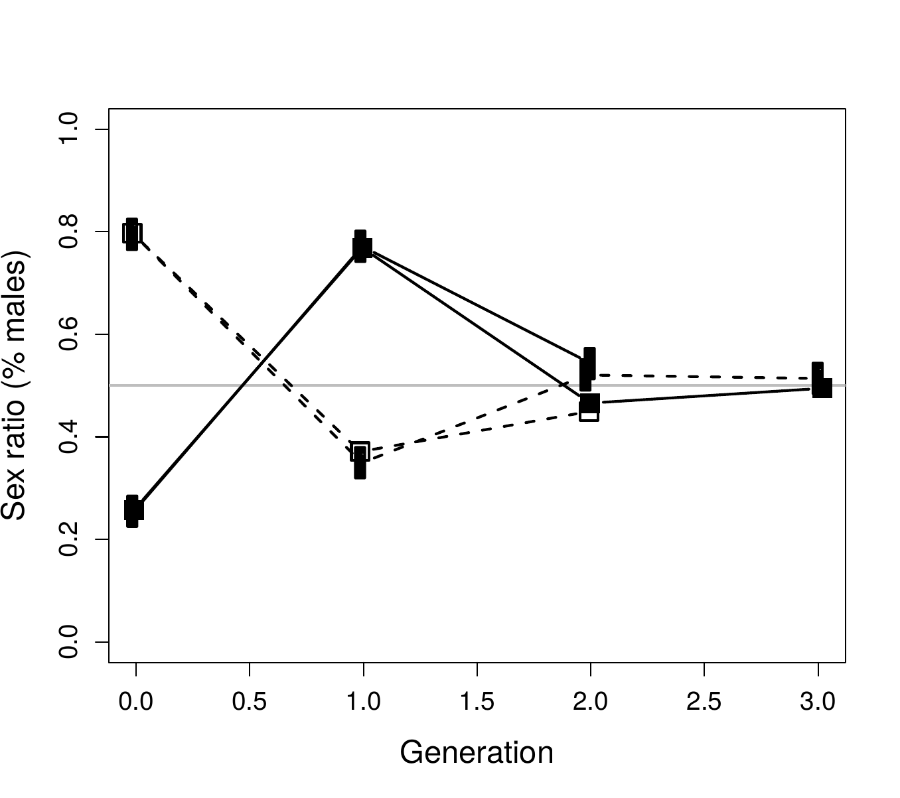
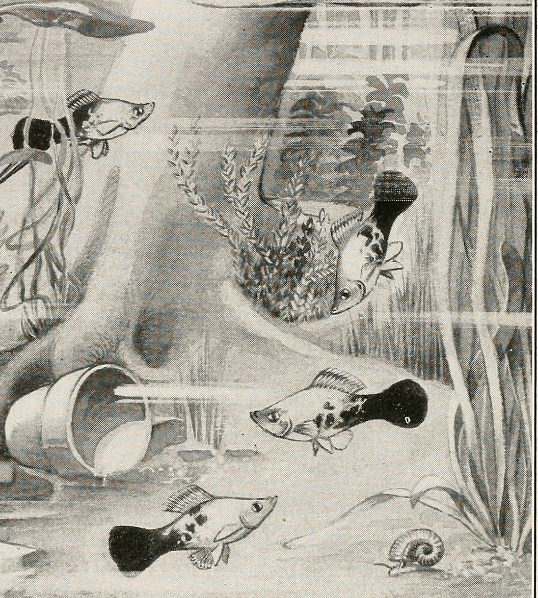
In many species, regardless of the mechanism of sex determination, the sex ratio is close to 50/50. Yet this is far from the optimum sex ratio from the perspective of the population viability. In many species females are the limiting sex, investing more in gametes and (sometimes) more in parental care. Thus a population having many females and few males would offer the fastest rate of population growth (i.e. the highest mean fitness). Why then is the sex ratio so often close to 50/50? Imagine if the population sex ratio was strongly skewed towards females. A rare autosomal allele that caused a mother to produced sons would have high fitness, as the mother’s sons would have high reproductive success in this population of most females. Thus our initially rare allele would increase in frequency. Conversely if the sex ratio was strongly skewed towards males, a rare autosomal allele that causes a mother to produce daughters would spread. So selection on autosomal alleles favours the production of the rare sex, a form of negative frequency dependence, and this pushes the sex ratio away from being too skewed (see Figure 10.24 for an empirical example). Only the 50/50 sex ratio is evolutionarily stable as there is no rarer sex, and so no (autosomal) sex-ratio-altering mutation can invade a population with a 50/50. The 50/50 sex ratio is an example of an Evolutionary Stable Strategy (ESS), described in more detail in Section 10.4.2.
A version of this sex ratio argument was first put forward by Düsing in 1884 and popularized by Fisher (1930), see Edwards (1998).
Adaptive adjustments to sex ratio in response to local mate competition.
There are, however, situations where we see strong deviations away from a 50/50 sex ratio. This can represent an adaptive strategy to situations where individuals compete against relatives for access to resources or mating opportunities. To see this consider fig wasps. There are many species of fig wasp, which form a tight pollination symbiosis with many species of fig. Wasp females enter the inverted fig flower structure (top right Figure 10.27) pollinating the flowers.
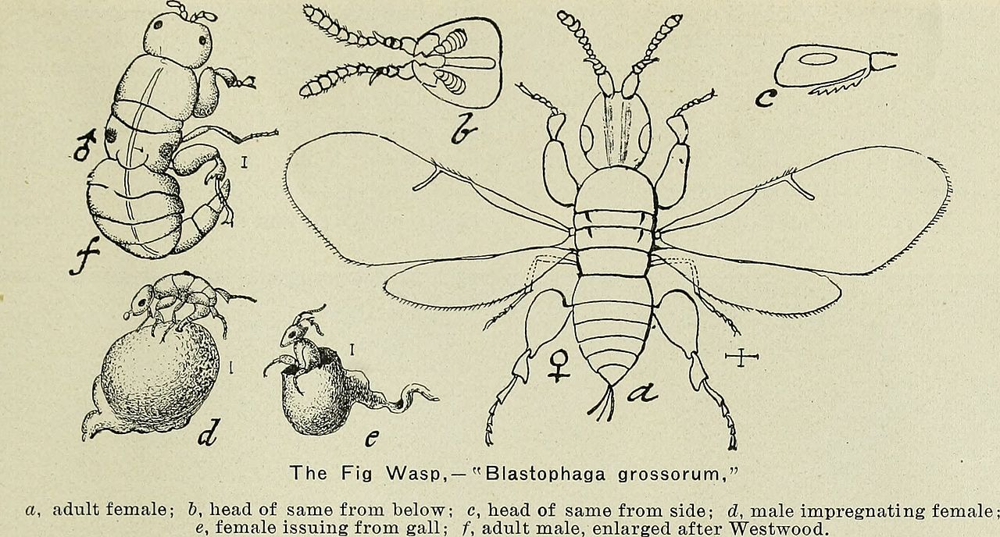
They lay their eggs in some of the flowers, which form galls in response. The young, wingless, male wasps emerge from their galls first (Figure 10.26f) but they never leave the fig. Their only role in this is to fertilize the female wasps (Figure 10.26d) in the fig and then die. The female offspring (Figure 10.26a & e) emerge in the fig just as the male fig flowers are emerging. The female wasps burrow out and and take the fig pollen with them as they fly off.
Female wasps have control over the sex of their offspring but what is their optimal strategy? Females have this degree of control as sex determination in wasps is haplo-diploid, with fertilized eggs developing as diploid females and unfertilized as males; by choosing to lay fertilized eggs they can control their number of daughters. If a female wasp lays her eggs into a fig with no other eggs, her sons will mate with her daughters and then die. Thus a lone female can maximize her contribution to the next generation by having many daughters, and just enough sons to fertilize them. And that’s exactly what female wasps do, in many species of fig wasp \(95\%\) of individuals born are female.
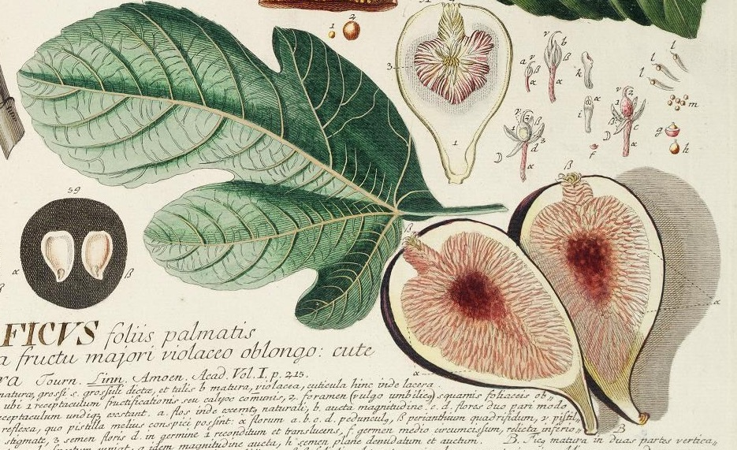
Selfish genetic elements and selection below the level of the individual.
These ideas about individuals pursuing selfish strategies, which can lower the populations fitness, extends below the level of the individual. The alleles within an individual can sometimes pursue selfish strategies that actively harm the individuals that carry them. Here we’ll take a tour of the rogues gallery of some the various genetic conflicts that occur and selfish genetic elements that exploit them. They’re included in this chapter in part because much of their biology can be understood from the perspective of the ideas developed here. But the main reason for talking about them is that they’re an amazing slice of biology.
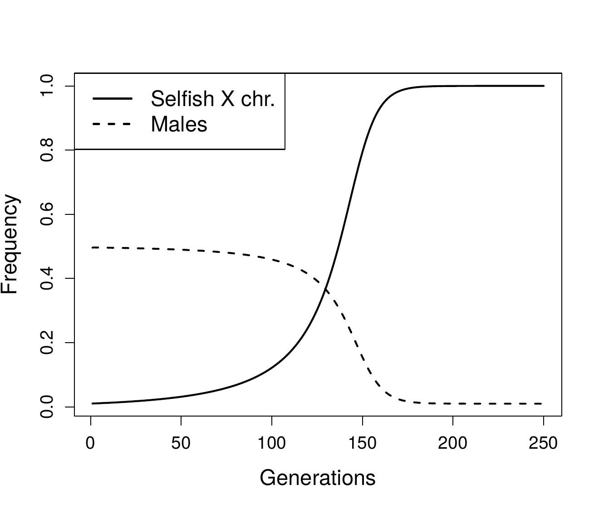
Selfish sex chromosomes and sex ratio distortion. From the perspective of the autosomes a 50/50 sex ratio normally represents a stable strategy, but all is not always harmonious in the genome. In systems with XY sex determination, male fertilization by Y-bearing sperm leads to sons, while male fertilization by X-bearing sperm leads to daughters. From the viewpoint of the X chromosome the Y-bearing sperm, and a male’s sons, are an evolutionary deadend. We can imagine a mutation arising on the X chromosome that causes a poison to be released during gametogenesis that kills Y-bearing sperm. This would cause much of the ejaculate of the males carrying this mutation to be X-bearing sperm, and so these males would have mostly daughters. Such an allele would potentially spread in the population as it is over transmitted through males, even if it somewhat reduces the fitness of the individuals who carry it (Hamilton 1967). The spread of this allele would strongly bias the population sex ratio towards females. Such ‘selfish’ X alleles turn out to be relatively common, and they can often substantially low the fitness of the bearer. They do not spread because they are good for the individual but rather because they are favoured due to selection below the level of the individual.
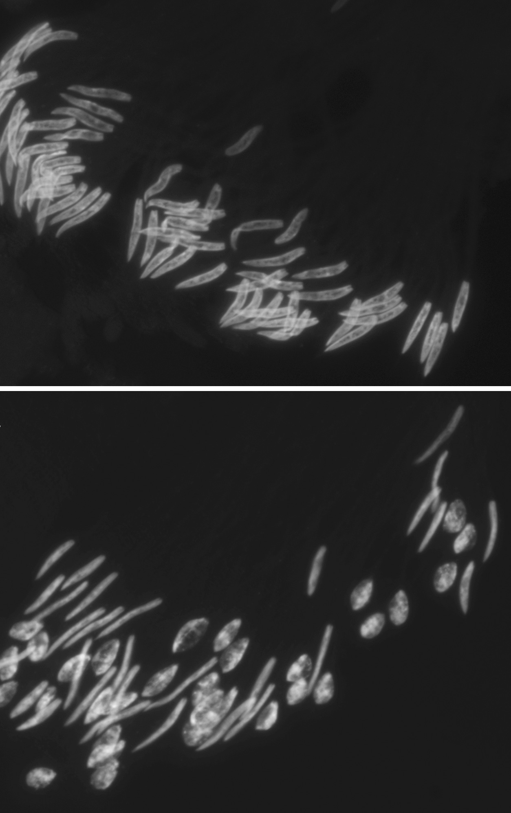
One example of a selfish X chromosome allele is the Winters sex-ratio system found in Drosophila simulans, so named as it was found in flies collected around Winters, California (just a few miles down the road from Davis). In crosses males carrying the selfish X chromosome have \(>80\%\) daughters. The gene responsible, Dox (Distorter on the X), is a gene duplicated by transposition and produces a transcript which targets a region on the Y chromosome preventing the Y-bearing sperm from developing see Figure 10.29 from Tao et al. (2007a).
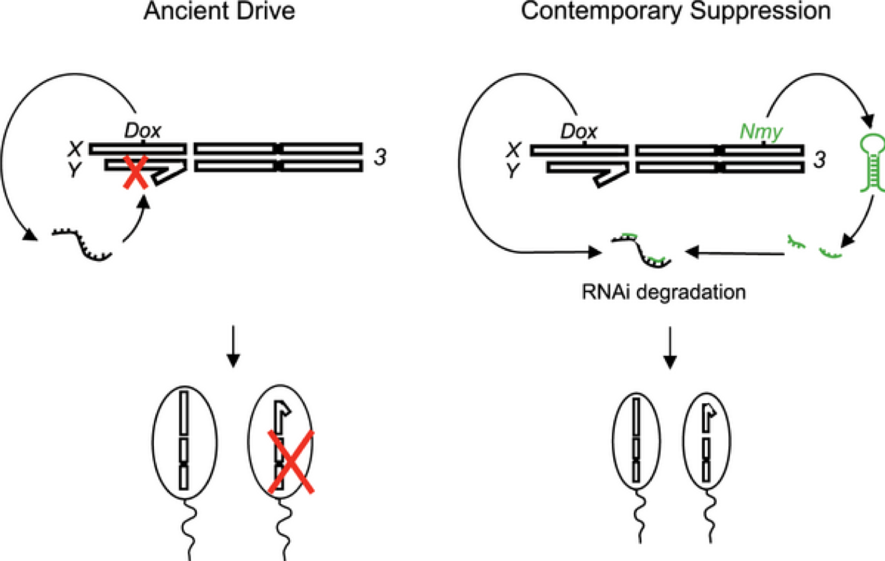
The spread of such selfish sex chromosomes, distorting the sex ratio strongly away from 50/50, can have profound effects for population growth rates.5 However, the other sex chromosome and autosomes are not helpless against the spread of selfish sex chromosome elements. In the case of a selfish X chromosome that has achieved appreciable frequency in the population, there will be a strong excess of females in the population such that suppressors of drive can arise on the autosomes and spread due to the fact that they cause the male bearer to produces some sons and so spread due to Fisherian sex-ratio advantage. This has happened in the case of the Winters sex chromosome system. An autosomal allele has spread through the population that suppresses the selfish X chromosome, restoring the 50/50 sex ratio. Now the sex ratio distorter can only be found by crosses to naive populations, where the supressor has not spread yet. The autosomal supressor gene turns out to be a duplicate of the selfish dox gene, NMY (Not Much Yang), that moved to the autosome through retrotransposition and now blocks the action of dox through RNA-interference degradation of the dox transcript (Tao et al. 2007b) (see Figure 10.30).
5 Indeed people have long discussed using selfish Y chromosomes, driving an overproduction of sons, for population control of malaria-spreading mosquitos. Natural selfish systems on the Y appear rare, likely because of its low gene content.
Conflict due to maternally transmitted elements.
Chromosomes transmitted maternally, i.e. only through mothers, also have divergent interests from the individual. Many plants are hermaphrodites producing both pollen and seeds. But from the perspective of the mitochondria in an individual, pollen is a waste of energy as the mitochondria won’t be transmitted through it. Thus a mutation that arises on the mitochondria abolishing male sexual function (pollen) and shunting energy into other processes can spread. The self spread of a Cytoplasmic Male Sterility (CMS) allele creates a population of females and hermaphrodite plants (a gynodioecious population). This strong excess of female plants in turn can select for the spread of autosomal suppressors of CMS that are favoured by producing the rarer gamete (pollen), and so restore the population to hermaphroditism.
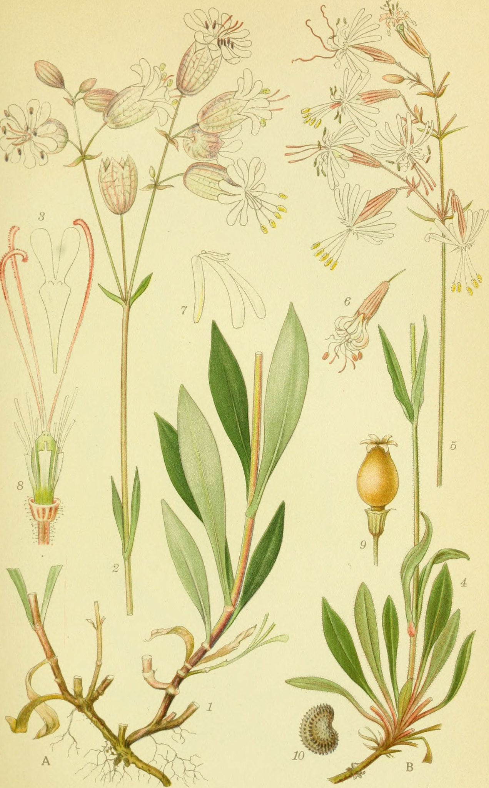
The spread of such CMS alleles, and subsequent autosomal suppression, is thought to be common in hermaphrodite species and often uncovered in crosses between diverged hermaphrodite populations. The discovery or deliberate creation of CMS alleles in agricultural plants is prized because it gives breeders more control over hybridization as they can more carefully control the pollen donor to the plants.
The maternal transmission of mtDNA also causes genetic conflicts in organisms with separate sexes. Males are an evolutionary dead end as far as mitochondria are concerned, and so mitochondrial mutations that lower a male’s fitness are not removed from the population of mitochondria. Thus the mitochondria genome may be a hotspot of alleles that are deleterious in males (an effect termed the “Mother’s curse” Cosmides and Tooby 1981; Frank and Hurst 1996).
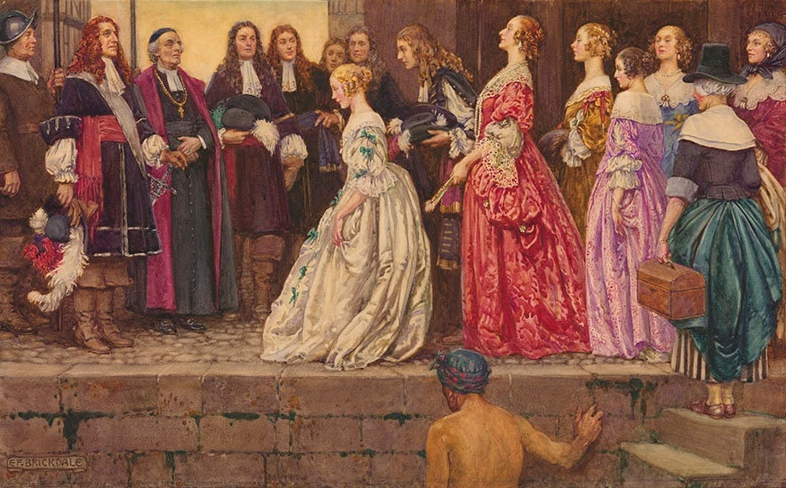

One example of a male-deleterious mitochondrial mutations underlying Leber’s ‘hereditary optic neuropathy’ (LHON) in humans. LHON causes degeneration of the optic nerve and loss of vision in teenage males (with much lower penetrance in women). One such LHON mutation is present at low frequency in the Quebec population. The Québécois population grew rapidly from a relatively small number of founders, leading to the prevalence of some disease mutations due to the founder effect. Thanks to the detailed genealogical records kept by French Canadians since the founding of Quebec, we know that nearly all the Québécois LHON alleles are descended from the mitochondria of a single woman, one of the fille du roi (Figure 10.32), who arrived in Quebec City in 1669 (Laberge et al. 2005). Using the genealogy, Milot et al. (2017) tracked all of her mitochondrial descendents, individuals whose mothers were in her matrilineal line, and so identified all the individuals in the Québécois who carried this allele. There was no significant difference in the fitness of females who carried or didn’t carry the mutation. In contrast, the fitness of male carriers of the mutation was only 65.3% that of male non-carriers. This mitochondria mutation has increased in frequency slightly over the past 290 years, despite its strong effects in males, due to the fact that its effects have no consequence for female fitness.
Question 10.8 The frequency of the LHON allele was roughly \({}^{1}\!/\!{}_{2000}\) in 1669. If females suffered the same ill consequences as males what would be the frequency today? (Assume there are \(\sim\)29 years a generation.)
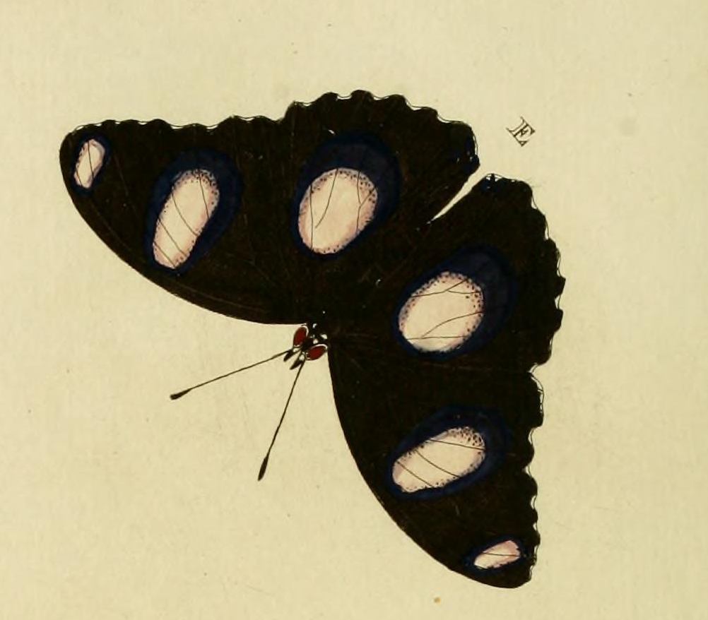
It’s not just chromosomes that get in on the act of the battle of the sexes. Numerous arthropods, including a high proportion of insects, are infected with the intracellular bacteria Wolbachia, which are passed to offspring through the maternal cytoplasm. As they are only transmitted by females, Wolbachia increase their transmission in a variety of selfish ways including feminization of males and killing male embryos. In one dramatic case, a male-killing Wolbachia strain forced a sex ratio of 100 females to every 1 male in Hypolimnas bolina (eggspot butterflies) throughout Southeast Asia. This extreme sex ratio persisted for many decades, according to the analysis of museum collections from the late 19C, before the sex ratio was rapidly restored to 50/50 by the spread of an autosomal suppressing allele. The autosomal supressor allele spread very rapidly within populations taking just 5 years to spread through the population from 2001 to 2006.
Selfish Autosomal Systems. Self genetic systems can also arise and cause genetic conflicts on the autosomes. The interests of autosomal alleles are usually relatively well aligned with promoting the fitness of the individual who carries them. However, these interests can diverge during meiosis and gametogenesis. After all, there are two alleles at each autosomal locus but only one of them will get passed to a child, therefore there can be competition to be in gamete transmitted to the next generation.
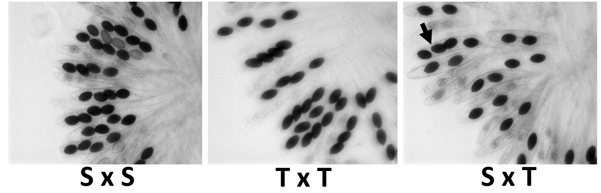
The four products of meiosis in the fungus Podospora anserina are arrayed in the ascus6 of the spores for the next generation. There is a polymorphism S/T at the Spok gene in this species. In spores from S \(\times\) S and T \(\times\) T individuals all four products are present. However, only two out of four spores are present in the \(\sim 90\%\) of asci from S \(\times\) T individuals (Grognet et al. 2014). The T allele is releasing a toxin that poisons off the S carrying spores. The jury is still out on whether the T allele spread due to the advantage created by sabotaging its rival product of meiosis (Sweigart et al. 2019). However, in other systems it is clear that alleles have spread due to their selfish actions.
6 from the Greek word askos meaning wineskin.
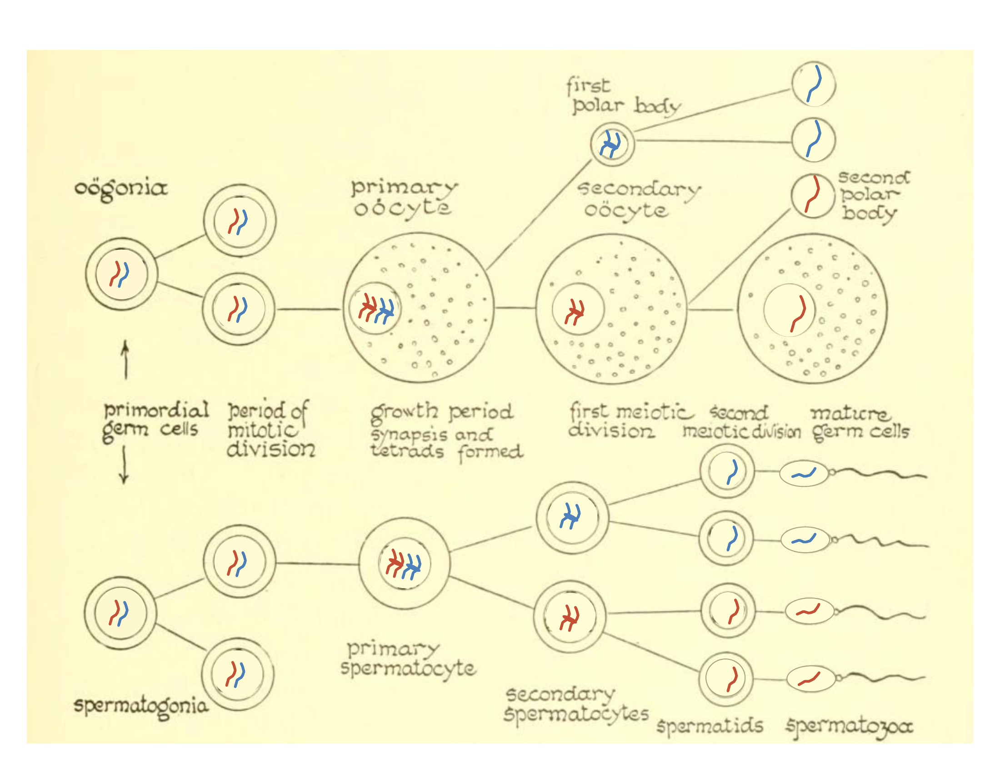
A number of well-established genetics systems illustrate in animals and plants how male and female gametogenesis offer different opportunities for selfish alleles (Figure 10.35). Just as how selfish X chromosome systems can spread by targeting sperm that carry the Y chromosome, selfish autosomal alleles can spread by targeting sperm carrying the other chromosome in heterozygotes. Both the Drosophila Segregation Distortion allele and the mouse T-allele are selfish autosomal systems that game transmission in heterozygotes by killing off sperm that don’t carry the allele in heterozygotes.
In females meiosis there is a unique opportunity for cheating. In male meiosis all four products of meiosis become gametes. However, only one of the four products of female meiosis becomes the egg, the other three products are fated to become the polar bodies. Thus alleles can cheat in female meiosis by preferentially getting transmitted into the egg rather than the polar body. If an allele on a red chromosome (in top panel of Figure 10.35) can manipulate any asymmetry of meioses so that it can be present in the egg \(>50\%\) of the time it will have a transmission advantage in female heterozygotes.
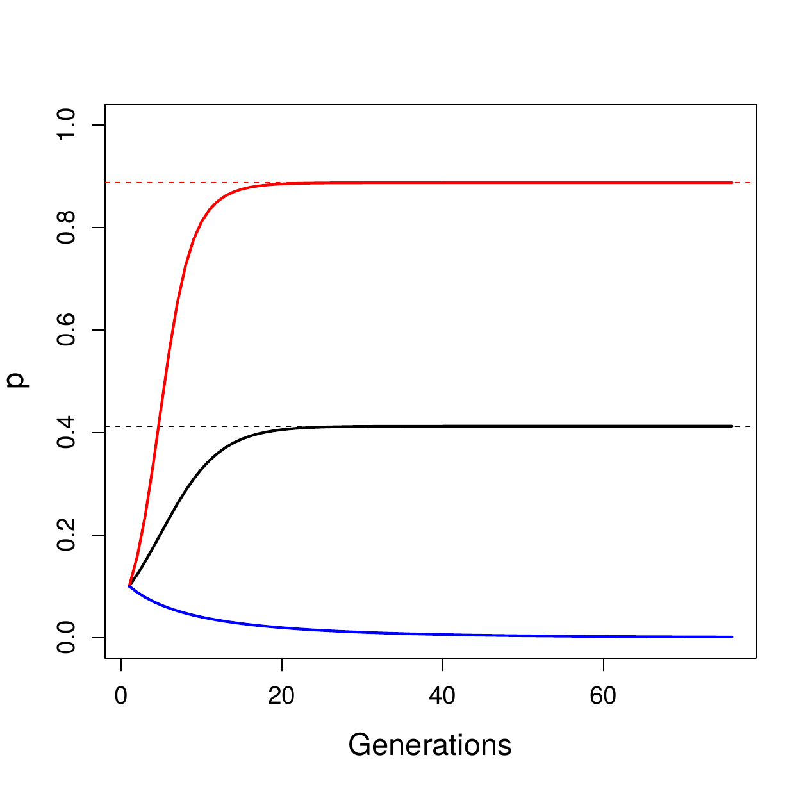
To see how such drivers can spread through the population, let’s consider the case of a population where an allele drives in both male and female gametogenesis. (Many known selfish alleles are sex-specific in their action, but that makes the math a little more tricky.) Imagine a randomly-mating population of hermaphrodites. In this population, a derived allele (D) segregates that distorts transmission in its favour over the ancestral allele (d) in the production of all the gametes of heterozygotes. The drive leads to a fraction \(\alpha\) of the gametes of heterozygotes (D/d) to carry the D allele (\(\alpha \geq 0.5\)). The D allele causes viability problems such that the relative fitnesses are \(w_{dd}=1\), \(1 > w_{Dd} \geq w_{DD}\). If the D allele is currently at frequency p in the population at birth, its frequency at birth in the next generation will be
\[p^{\prime}=\frac{w_{DD}p^2 + w_{Dd} \alpha 2pq }{\overline{w}} \tag{10.42}\]
when \(\alpha={}^{1}\!/\!{}_{2}\), i.e. fair Mendelian transmission this is exactly the same as our directional selection, which results in our \(D\) allele being selected out of the population (blue line, Figure 10.36). However, if \(\alpha>{}^{1}\!/\!{}_{2}\), i.e. our deleterious allele cheats, it can potentially increase in the population when it is rare (red and black lines, Figure 10.36)). However, the allele can become trapped in the population at a polymorphic equilibrium if its cost is sufficient in homozygotes. This is akin to the case of heterozygote advantage, but now our allele offers no advantage to heterozygote but has a self advantage in heterozygotes.
Many of the known autosomal drive systems are polymorphic in populations, unable to reach fixation in the population due to their costs in homozygotes. It seems likely that this represents an ascertainment bias, and that many other selfish systems that had lower selective costs have swept to fixation.
Question 10.9 (Trickier question) With reference to of our autosomal driver from Equation 10.42.
A) Imagine the cost of the driver were additive, i.e. \(w_{dd}=1\), \(w_{Dd}=1-e\), \(w_{DD}=1-2e\). Under what conditions can the driver invade the population? Can a polymorphic equilibrium be maintained?
B) Imagine the allele is completely recessive, i.e. \(w_{dd}=w_{Dd}=1\). What conditions do you need for a polymorphic equilibrium to be maintained? What is the equilibrium frequency of this balanced polymorphism?
Appendix: ESS for the sex ratio
Let \(R\) be the resources available to an individuals and \(C_{\text{♂}}\) and \(C_{\text{♀}}\) be the cost of producing a son and daughter respectively. If our focal mother directs \(s\) of her effort towards sons and \((1-s)\) of her effort towards daughters, she’ll produce \(\frac{Rs}{C_{\text{♂}}}\) sons and \(\frac{R(1-s)}{C_{\text{♀}}}\) daughters. Let’s assume that the mean reproductive value of daughters is \(1\). Given this, the average reproductive value of sons is the average number of matings that a male will have, i.e. the ratio \({}^{\# \textrm{~females}}\!/\!{}_{\# \textrm{~males}}\). So if the population has a sex ratio \(s_p\), the fitness of our focal female is
\[W(s,s_p) = \left( \frac{R(1-s)}{C_{\text{♀}}} \times 1 \right) + \left( \frac{Rs}{C_{\text{♂}}} \times \frac{{}^{R(1-s_p)}\!/\!{}_{C_{\text{♀}}} }{{}^{Rs_p}\!/\!{}_{C_{\text{♂}}}} \right) \tag{10.43}\]
expressing fitness in terms the number of grandkids our focal female is expected to have.
To find the ESS we want a sex ratio \(s^*\) for the population such that no mutant has higher fitness. We can write this as as the population having strategy \(s_p=s^*\), and then seeing what choice of \(s^*\) leads to \(W(s^*,s^*)> W(s,s^*)\) for \(s \neq s^*\), i.e. that no new strategy (\(s\)) has higher fitness than the ESS strategy \(s*\). We can find this ESS \(s^*\) by
\[\left. \frac{\partial W(s,s_p)}{\partial s} \right\vert_{s^* = s=s_p} = 0 \tag{10.44}\]
taking the derivative of Equation 10.43 we obtain
\[\frac{\partial W(s,s_p)}{\partial s} = - \frac{R}{C_{\text{♀}}} + \frac{R}{C_{\text{♂}}} \left( \frac{{}^{R(1-s_p)}\!/\!{}_{C_{\text{♀}}} }{{}^{Rs_p}\!/\!{}_{C_{\text{♂}}}} \right) \tag{10.45}\]
setting \(s^* = s=s_p\) and rearranging
\[\frac{R}{C_{\text{♀}}} = \frac{R}{C_{\text{♂}}} \left( \frac{{}^{R(1-s^*)}\!/\!{}_{C_{\text{♀}}} }{{}^{Rs^*}\!/\!{}_{C_{\text{♂}}}} \right) \tag{10.46}\]
which is satisfied when \(s^* = {}^{1}\!/\!{}_{2}\), i.e. devoting equal resources to male and female offspring is the ESS, which corresponds to a 50/50 sex ratio if male and female offspring are equally costly.
Chapter summary.
Genotypes rise or fall in frequency across a generation in proportion to their fitness divided by the mean fitness of the population. We can then calculate the allele frequency change that this change in genotype frequencies implies.
The marginal fitness of an allele is the weighted average of its fitness across the genotypes it occurs in. The allele with the highest marginal fitness increases in frequency due to selection.
Under models of frequency-independent selection, selection acting a single locus is expected to act to locally maximize the mean fitness of the population.
Under diploid directional selection, dominance is a key parameter in understanding the rate of spread of alleles. Beneficial dominant alleles are quick to spread but slow to fix, while beneficial recessive alleles are slow to spread but fix faster if they manage to spread.
Under haploid models of selection, with a constant environment, a beneficial allele sweeps logistically through the population and we can calculate the time it takes to transition from one frequency to another. These results also hold approximately for diploid models of additive selection.
Sustained, directional selection will remove variation from a population. However, selection can in some cases maintain polymorphism, for example under models of heterozygote advantage and negative-frequency- dependent selection.
When selection pressures fluctuate over time, the geometric mean fitness of alleles and genotypes can give a better indication of their long term fitness than their arithmetic mean fitness. This means that selection can favour alleles and genotypes that bet-hedge, i.e. reduce the variance in their fitness at the expense of their arithmetic mean fitness.
When fitnesses are frequency-dependent, e.g. because the fitness of a strategy depends on the frequency of other strategies pursued by others in the population, selection can drive the mean fitness of the population down. One example of this is the Fisherian selection argument for a 50/50 sex ratio.
Selection can operate below the level of the individual, with alleles that favour their own selfish transmission at the expense of individual-level fitness. This can lead to bouts of genetic conflict, where modifiers are selected to suppress these selfish alleles.
Question 10.10 You are studying the polymorphism that affects flight speed in butterflies. The polymorphism does not appear to affect fecundity. Homozygotes for the B allele are slow in flight and so only 40% of them survive to have offspring. Heterozygotes for the polymorphism (Bb) fly quickly and have a 70% probability of surviving to reproduce. The homozygotes for the alternative allele (bb) fly very quickly indeed, but often die of exhaustion, with only 10% of them making it to reproduction.
A) What is the equilibrium frequency of the B allele?
B) Calculate the marginal absolute fitnesses of the B and the b allele at the equilibrium frequency.
Question 10.11 An autosomal pesticide resistance allele is at 50% frequency in a species of flies. We stop using the pesticide, and within 20 years the frequency of the allele is 5% in the new-born flies. There are two fly generations per year. Assuming that the allele affects fitness in an additive fashion, estimate the selection coefficient acting against homozygotes for the resistance allele.
Question 10.12 Kin selection has been proposed as a way that the male deleterious mitochondrial mutations could be removed from the population, solving the mother’s curse. Can you explain this idea?